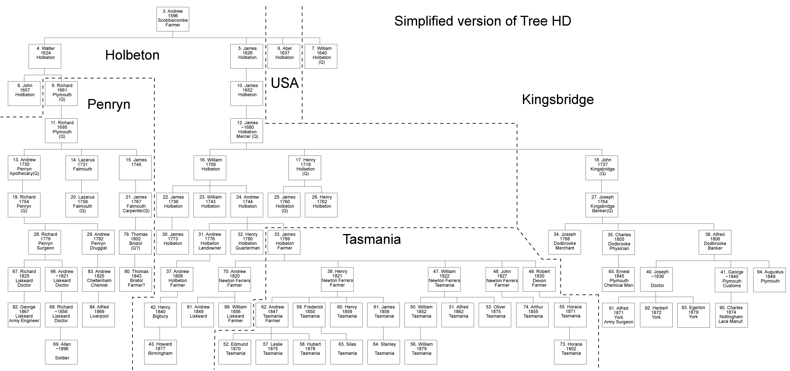

This is a complex tree. At its core lies the work of Allen and Dymond (A&D), which we believe to have been largely compiled from family records. The ground has been largely worked-over by others and the results seem to have made their way into the International Genealogy Index (IGI) or into the LDS ancestral file (IGI-AF).
It is not clear where that information comes from, and some of it is contradictory, which leaves open the question of how reliable it is. Where no source is given below this usually means that I, or someone I am in contact with, has seen the original records or the material is from the A&D directly. Some information has come from work done in the 1940s by Treeby Watson Hingston (TWH).
The ordering of the children of any family is the order of their birth, as far as I know it, irrespective of sex. However, Victorian, and some modern, pedigrees list all the boys before all the girls; where I have no information about ages I follow the order of my source. The same ordering is maintained in the families of each generation. The husbands of Hingston women are listed where their wives appear as children, as are their children. Because this is a one-name study, the families of sons are given separate entries in the next generation since they can propagate the name to future generations. The same would apply to illegitimate children of Hingston women. The numbering is purely arbitrary - new numbers have been added as necessary and the old numbers left so that people who have downloaded the tree at different times can all refer to the same person. I may, one day, renumber more logically, but that will only happen once we are sure the tree is complete.
Sir Theodore Fortescue Fox 1899-1989 kept many records and passed many to Cathy Stevenson who has passed them to me. Unfortunately he does not give sources but where appropriate I have added things below with a reference (TFF).
The Tasmanian branch has been researched extensively by Karen Hughes and Cathy Stevenson, to whom I am indebted for resolving some ambiguities in the trees. I believe they now agree with the findings in the 1940s of TWH. I have also received some information about the Tasmanian Hingstons from Robin Walker (RW) (gwa90642@bigpond.net.au)
Some information about the pupils who attended the Quaker School at Sidcot has been supplied by Howard Knight (HMK).
If anyone can access the original records and can remove any of the ambiguities could they please email me with the information, and I will update the tree accordingly.
I am very grateful to everyone who has contributed to this tree.
Chris Burgoyne
Simplified Version of Tree HD
This chart shows the various Hingston families that form the tree, with the area where they lived and the relationship between them. (Q) indicates a family that is believed to have been Quaker. Clicking on a box should take you to the listing for that family. Right-clicking on the chart should allow it to be viewed at a larger scale and it should be printable on an A3 sheet.

Possible earlier members of this line
Generation No.1
100. Unknown HINGSTON, would probably have been born about 1400. His existence is inferred from the fact that his two sons are mentioned in IPMs in 1488 and 1511. He is presumed to have lived at Hingston in Bigbury, then seemingly known as Hyndestone.
JOHN HINGSTON; may have had a daughter ELIZABETH HINGSTON who married JOHN BURY of Colaton, but accirding to Philip's IPM they left no heirs, so all the property was left to Robert's son Philip.
101. ROBERT HINGSTON was the subject of the IPM made in 1488 on his death. He clearly lived at Hingston but held extensive property over the South Hams. He died 28 Jan 1487/8. His wife is shown by Prideaux as MARGARET Cottwall (probably COTTERALL), who later married WILLIAM ASHFORD. Margaret died 26 Oct 1508 and William Ashford died 17 Jul 1508. William is shown as having a son Nicholas Ashford born 1485, so presumably he was also married earlier.
Robert and Margaret seem to have had six children:-
102. PHILIP HINGSTON, who died 17 Oct 1508. The 1511 IPM makes no mention of a wife or children and his brother John was dead so all the property went to the four sisters.
JOHN HINGSTON d.s.p.
ELIZABETH HINGSTON, born before 1482. If this is the Elizabeth
MARGARET HINGSTON, born before 1482,
JOAN HINGSTON, born before 1482.
AGNES HINGSTON, born before 1482.
There is some confusion about the various women mentioned here.
Records at Wonwell say that in the time of Henry VI (1422-1461), ROBERT de HENDESTON succeeded, and after him his son PHILIP, who left three daughters; MARGARET, the wife of John Fortescue; ELIZABETH, the wife of PHILIP COURTENAY of Molland (N. Devon); and PHILLIPA, the wife of Robert Ashford, or Ayshford. The property continued in the family of the last named until about 1790. [This is in conflict with the IPM, a primary source, which implies that Philip had no offspring, so it may be that the "daughters" mentioned were in fact sisters.]
A Courtenay family web site says Sir PHILLIP COURTENAY of Molland, born: c.1432, Powderham and died 7 Dec 1489. Inherited Molland Bottreaux. Wonwell in Kingston, Devon from wife. Duke of Clarence's Council 1470-8. Sheriff 1470. Member of Parliament 1470-1,2-5, 1484. Battle of Barnet 1471. JP 1471-8, 1483-5. Fell with Clarence 1471, restored by Richard III; Kt of the Body 1484. Married 1: ELIZABETH HYNESTON c.1452, Wonwell, Kingston. [The Wonwell records seem to show that Wonwell went to the Ashford family, not the Courtenays. But is plausible that Elizabeth could have been born as early as 1430, which would allow her to have married in 1452.] The Wonwell records say that in the late 15th century Robert Ashford (Ayshford) married PHILIIPPA, daughter and heir of ROBERT HINGSTON. (Milles, "Parochial Collections")
A PHILLIPPA ELIZABETH HINGSTON, daughter of PHILIP HINGSTON, married in 1496 to JOHN COFFIN of Portledge, Alwington. He died on 15 Dec 1566 at Devonshire, England.. They had a son Sir Richard Coffin who was Sheriff of Devon in 1507 and a younger brother, Sir William Coffin who joined Henry VIII's household about 1515, and took part, as a gentleman of the privy chamber, in the tournament between Henry VIII and the French King held at Guisnes in 1519. In 1529 he became a Member of Parliament for Derbyshire. He died: 8 Dec 1538, Standon, Herts. [This Hingston/Coffin marriage is often quoted but with many different dates. The ones quoted here seem to be the most consistent. Most of the sources assume she came from the area around Alwington, but we know of no Hingstons in that area.]
In Burke's "A genealogical and heraldic History of the Commoners of Great Britain and Ireland, Volume 2 (1885). JOHN FORTESCUE was the son of Sir Henry Fortescue, chief justice of the court of common pleas in Ireland, 1426 and his first wife Joan. John married MARGARET, daughter and heir of WILLIAM HINGSTON, of Wonnel, and left an only daughter and heiress, Elizabeth Fortescue, of Fallapit, who married a cousin Lewis Fortescue, one of the barons of the exchequer.
It would appear that the only descent is through daughters, so future Hingstons are unlikely to be descended directly from this family. We must therefore look for cousins if the link to the 1. Andrew below is to be established.
Generation No. 1
1. ANDREW HINGSTON. Andrew would have been born sometime around 1540, give or take 10 years. TFF shows him as being the son of RICHARD HINGSTON, who was born about 1500; Andrew is described as being of Holbeton or Wonwell but it seems likely that Wonwell (and Hingston) were no longer held by Hingstons at this time.
The descent shown in black is as shown in Allen and Dymond, and as has been shown in the tree since the site began. The descent shown in green, between 1. Andrew and 12. James, is an alternative shown in WEH's letter of 1905. It is not yet known on what evidence it is based. If anyone can provide backup information, please contact me.
Child of Andrew Hingston is:
2. WALTER HINGSTON. (This is the descent as shown in Allen and Dymond)
2. WALTER HINGSTON is believed to have been the son of 1. Andrew Hingston and died Abt 1627. TFF shows him as being born 1566, with a wife called SABILLA who died in 1642; he is described as being of Holbeton.
3. ANDREW HINGSTONwas born in Scotscombe (probably Scobbiscombe), Holbeton, (TFF says in 1596), the son of 2. Walter Hingston, and died 1643. He married GRACE 1623. TFF says she was from Ringmore, born 1602, died 1675).
Children of Andrew Hingston and Grace Hingston? are:
4. WALTER HINGSTONwas born 14 Nov 1624 at Holbeton (IGI), the son of 3. Andrew Hingston and Grace and died 1684. He married SARAH REEVE 1652 (IGI says at Plymouth). She was born 2 Sep 1624 and died 8 Jul 1704 at Plymouth (both from IGI-AF). TFF agrees with her birth-date and says she was from Exeter.
Children of William Hingston and Sarah Reeve are:
ANDREW HINGSTON, b. 1654 (A&D) - 26 Apr 1656 at Plymouth (IGI). Died unmarried.
AGNES HINGSTON, b. 1663 (A&D) - 17 Feb 1665 at Plymouth (IGI).
5. JAMES HINGSTON was born 11 Jun 1626 at Holbeton (IGI), the son of 3. Andrew Hingston and Grace and died 1659. He married ALICE. The family appear in Allen and Dymond.
6. ABEL HINGSTONwas born 30 Jul 1637 at Holbeton (IGI), the son of 3. Andrew Hingston and Grace. He married HONOR in 1664 (IGI).
Children of Abel Hingston and Honor are:
SUSANNA HINGSTON, b. 1665 at Holbeton (IGI).
ABEL HINGSTON, b. 6 Feb 1666 at Holbeton (IGI). He is the most likely candidate to be the the subject of an obituary in the Friend published in Philadelphia (2 May 1857, vol 30, page 268). "This Friend was born in England about the year 1661. He was an early settler in Philadelphia county, where he resided for many years. Being faithful to the convictions of truth, he grew in religious experience, and became qualified for usefulness in the church. In 1719, he was appointed an elder of Abington Monthly Meeting for Byberry Particular Meeting, and this, as well as many other appointments, testify to the consideration in which he was held by his friends. He was a useful member of religious Society, continuing even to advanced age a willing labourer for the Truth, in the station to which he was called. He deceased Eleventh mo., 26th, 1747, aged about 86 years." According to a message on the Claypoole mailing list, Abel (Hinkson) married ELIZABETH and had two daughters, ELIZABETH HINKSON who married on 10 Jun 1728 John Cadwallader (born 19 Jun 1703 in Horsham, Montgomery County, Pennsylvania, son of John Cadwallader and Mary Cassell) and SUSANNAH HINKSON who married to George James on 25 Mar 1717.
JOSEPH HINGSTON, b. 2 Mar 1668 at Holbeton (IGI).
PHILIP HINGSTON, b. 19 Feb 1670 at Holbeton (IGI); d. 1670.
GRACE HINGSTON, b. 18 Mar 1672 at Holbeton (IGI).
7. WILLIAM HINGSTON was born 20 Dec 1640 at Holbeton (IGI), the son of 3. Andrew Hingston and Grace. The Dictionary of Quaker Biography says that he was arrested at Exeter and 1658 (presumably for being a Quaker). He married SARAH TRIPE 26 May 1666 at Kingsbridge (IGI says 22nd).She may be the daughter of NICHOLAS TRIPE, who is described in the journal of George Fox, founder of the Quakers. George wrote "The next day we visited Kingsbridge and at an inn inquired for the sober people of the town. They directed us to Nicholas Tripe and his wife; and we went to their home. They sent for the priest with whom we had some discourse; but he being confounded quickly left us. Nicholas Tripe and his wife were convinced and, since, there is a good meeting of Friends in that country." (The story of William Cookworthy, by Hubert Fox, published by the Cookworthy Museum, Kingsbridge). In 1670 he had some goods distressed for attending a meeting and again in 1671 he had goods distressed to the value of £16.4s.4d. In 1676 he had a large quantity of timber taken, to the value of £35. 15s because he had attended a meeting at Woodhouse. In 1683-85 he was imprisoned at Exeter. In his absence from home was again distrained of goods to the value of £14. 15s. He and others were liberated by the proclamation of James II, who came to the throne in 1685 and issued an amnesty freeing 1500 Quaker prisoners throughout the country. The fines were substantial penalties (£1 in 1671 is would purchase goods to the value of about £126 today, or be equivalent to an income of about £1870).
Children of William Hingston and Sarah Tripe are:
HENRY HINGSTON. Listed in the Quaker Dictionary of Biography as the eldest son of William, born 19 Feb 1668 (OS) which says that he received a very good education and became very proficient in Latin,Greek and Hebrew. He was a strict Quaker and regarded all forms of amusement as powerful incentives to evil. He felt so deeply about dancing that on one occasion he went to a public ball to protest against it and to remind those taking part that they were under a baptismal vow to forsake pomp and vanity. He also disapproved of the baptism of children and in 1701 wrote a letter of protest to a family about to take part in such a ceremony. Soon after the end of the war with France in 1697 he travelled to Morlaix, where in 1699 he bought a quantity of goods for his business. The duty charged on the goods did not represent their true value and although the mistake was not his, the affair troubled him deeply, so that two years later he wrote to the Commission of Customs in London expressing his willingness to pay the full amount, which he did. He was chiefly known as the author of a book printed in Exeter in 1703 and dedicated to Queen Anne. It was of a religious and moral tendency entitled "A dreadful alarm upon the clouds of heaven, mixed with love". It was not well received and was discourage by the Meeting for Sufferings in 1705. Henry Hingston of Kingsbridge died, apparently unmarried, about the year 1724 at the age of 56. There is a burial entry for a Henry Hingston buried 11 Feb 1720 (OS).
WILLIAM HINGSTON, born 1668 at Kingsbridge (IGI); FCH-R (HM#17) found a minute in the Friends Monthly Meeting book at Plymouth 5 8 (October) 1708. "William Hingston desiring a Certificate from us in order to his takeing a voiage to Pennselvania to make a settlement there to certifie his sober behaviour & cleanness from women with regard to marriage, for the satisfaction of ffriends in America where his lot may be cast; & Jas. Hingston is desired to make enquiry into his conversation, & give an account as soon as possible.". A note on 2 9(November) 1708 said "The certificate granted at this meeting."
A&D reported that he died in America.
87. JONATHAN HINGSTON, the son of 86. George Hingston. Of Holbeton, died 21 Mar 167?.
8. JOHN HINGSTONwas born 1657 (A&D) or 26 Feb 1659 at Plymouth (IGI), the son of 4. Walter Hingston and Sarah Reeve. He married AGNES WILLING 17 Jul 1691 at Holbeton (IGI).
Children of John Hingston and Agnes Willing are:
ELIZABETH HINGSTON, born 21 Sep 1692 at Holbeton (IGI), married, firstly, SMITH; married, secondly, JOSIAS HALL. The Falmouth document says he came from Buxton in Devon (Brixton would make more sense - I don't know of a Buxton)
JOHN HINGSTON born 22 Oct 1698 at Holbeton (IGI). Died unmarried.
9. RICHARD HINGSTONwas born 1661 (A&D) - 25 Mar 1663 at Plymouth (IGI), the son of 4. Walter Hingston and Sarah Reeve, and died 10 Feb 1710/11 in Kea, at house of Thomas Giddy, and was buried at the Burying Place of the Key Meeting 12 Feb 1710/11 (from Prideaux's transcription of the Quaker meeting registers). (A&D say Nov 1711, IGI says 1710). According to TFF he was a Minister at Plymouth, but I am not sure of what he was a Minister (Do Quaker Meetings have Ministers?). He married GERTRUDE (or GARTHRUD) TREGENNEW 18 Mar 1688 at Trenant, Cornwall. (Her name is also given as Trekennow and the month of the marriage as Jan - IGI). She was born 27 Jan 1658 at Dulce, Cornwall (IGI-AF). Prideaux records her christian name as 'Garthred' (from the record of son Andrew's birth). TFF says her father was Richard Tregennow of Trenant in Duloe, near Looe and that she died in 1741; she was buried at Kea 22 Oct 1741 (OPC)..
Lived at Plymouth (A&D). List of whole family from Allen & Dymond.
Children of Richard Hingston and Gertrude Tregennew are:
ANDREW HINGSTON, "born ye 26 day of ye 9 month, os, 1692" (Prideaux, transcribed from meeting registers), Plymouth - this may well mean November 1692 since numerical abbreviations of months often referred to the Latin component of the name of the month; died 5 Jan 1762, Penryn and buried 8 Jan 1762 (Prideaux) at Key; married, firstly, MARY REYNOLDS, 9 Jul 1711 at Plymouth (IGI gives Sep), the daughter of Caleb and Elizabeth Reynolds, lately of the city of Exeter. They moved from Plymouth to Falmouth in the fourth month 1722 and from thence to Penryn in 1730 where she died the 5th day of third month 1735 and was buried the 8th day of same at Key and had no issue. Andrew married, secondly, ELIZABETH WILKEY, 13 Nov 1740 at Kingsbridge (IGI) the daughter of Edward and Elizabeth Wilkey of Liskeard, whom he married on the 13th day of November, 1740. She was baptised at Liskeard aforesaid on the 18th September 1709 and had no issue. The IGI says the marriage took place at Kingsbridge. Elizabeth died on 28 November 1768 at Penzance and was buried at Key on the 3 December aged 59 years. "He was a worthy member of Society, in his life time well esteemed by all that knew him and at his death much lamented." (Prideaux). Andrew took on the care of some of the orphaned children of his brother Richard (along with Nathaniel Steel, the children's maternal grandfather); he had no family of his own, and seems to have discharged his part with diligence and kindness. Richard's second daughter Sarah and some of the younger children lived with him. John Griffith, a travelling minister of note among Friends writes in his journal, 1750, that A. Hingston, wife and niece were “affectionately kind” to him. A.H. died in 1762.
10. JAMES HINGSTONwas born 1652 (Source: Allen & Dymond), the son of 5. James Hingston and Alice, and probably died 1712/13; 'James Hingston sennex' was buried at Holbeton 20 Jan 1712/13 and this is the most likely match.
11. RICHARD HINGSTONwas born 11 Oct 1695 at Plymouth, the son of 9. Richard Hingston and Gertrude Tregennew, and died 10 Apr 1748 at Kea, Cornwall. He was described as Surgeon and Apothecary of Penryn. He, and his descendants, are the subject of a memo written in 1906 by R.H.F. He married, firstly, SARAH PURCHASE 15 Oct 1718 at Exeter. The eminent “Friend”, Thomas Story, was present and speaks of the occasion in his Journal as “a good open time”, many present. His signature on the marriage certificate is in a large bold hand at the head of the other witnesses. Richard and Sarah Hingston removed with a daughter Mary who was born to them, in the year 1719, from Plymouth to Penryn; but his wife died in 1722, and was buried at Kea (now “Come-to-good”) where his father Richard Hingston of Plymouth, who was a minister among Friends, had died in 1710 at the house of T. Giddy, and was buried. He married, secondly, ELIZABETH STEEL 15 Jun 1725 at Key, Cornwall (IGI). She was born 21 Nov 1708 at Falmouth and died 10 Apr 1747. Elizabeth was the daughter of Nathaniel Steel, she being, as it appears, under 17 years of age. N. Steele was “a man of note” in Falmouth, and of substance, a rope-master; his kinsman Lazarus Steele was mayor of the town in 1740. The Hingstons had a large family, many of whom died young. Thrice they essayed to perpetuate the name Nathaniel, and the third child lived to maturity. Many French prisoners of war were in those years landed at Falmouth, and the business of caring for them medically becoming one of some profit, R. Hingston obtained by the interest of his father-in-law that office, but within a year or two he contracted fever from the prisoners stationed at Kergillack, a farm not far from Falmouth, and died in 1749. His wife had died the year before at the age of 38, having had thirteen children. At R. Hingston’s death nine only of his fourteen children were living, two having died in infancy, and others at 7, 8, and 19 years. He left this troop of orphans to the care of his brother Andrew Hingston, and to Nathaniel Steel, who with Robert Scantlebury of Mevagissey, and his daughter Mary Hingston, were appointed his executors. In his will, now in the possession of Nathaniel Fox, he consigns(?) his soul to God, with a good deal of religious expression. There can be little doubt that there was Phthisis in the Hingston family. It appeared in both the Fox and Tregelles families. A cousin of Richard, another Andrew, was dying of phthisis in 1744. They were apparently a large-framed race of poor vitality.
“Come-to-Good” or Kea meeting house and graveyard where so many of the family worshipped, married and were buried, is a picturesque spot, secluded among the hills which border Malpas Road on the Truro River, some three miles south of that town.
“Memoirs of (?) Cookworthy” of Plymouth, by his grandson Geo. Harrison, published in London in 1857, contains a series of letters (1740-1747) to Richard Hingston, who he supplied with drugs. ?.C. was a cultivated man, linguist, and of literary power, as well as a deep religious character, and his intimate correspondence with our ancestor implies similar qualities in him.
Child of Richard Hingston and Sarah Purchase is:
MARY HINGSTON, b. 22 Jul 1719 at Penryn; d. 26 Jul 1748. Mary died a few years after her father, probably of the same complaint. She was 25 (This can't be right since if she was born in 1719 she would have been 29 when her father died).
Children of Richard Hingston and Elizabeth Steel are (with dates as listed in the Dictionary of Quaker Biography which differs from that given in the IGI, udsually by two months:
NATHANIEL HINGSTON, b. 30 Aug 1726 at Penryn (DQB); d. 4 Feb 1733 (OS).
RICHARD HINGSTON, b. 12 Jul 1728 at Penryn (DQB); buried 12 Jun 1747. Richard died shortly before his mother: he had been sent to a Friend’s school at Kendal, making the long journey by coach, and five of his characteristic school letters are preserved; he learnt “Virgil, Greek grammar, and Cornelius Nepos”, and his death at 19 must have been a severe trial.
ELIZABETH HINGSTON, b. 28 Dec 1733 at Penryn (DQB); d. 1802; married JOSEPH FOX, 17 Apr 1754 at Penryn (OPC). Joseph was born 1729, the son of George Fox, a merchant of Par and his wife Anne Debell; he died in 1785; there is a Wikipedia entry about him. Elizabeth probably lived with her widowed grand-father N. Steele after her parents died, and after Nathaniel died she may have stayed on with other members of his family at Falmouth. Joseph Fox, who settled at Falmouth as a surgeon somewhere about 1750, would meet her there, and married her when she was twenty years old, in 1754. They had a large family, faithfully reproducing the Christian names of their near kindred. She, who is described as a very stately woman, outlived her husband seventeen years, dying at 69 in 1802. According to A&D their children were Anna, who married William Rawes and later Thomas Thompson; Elizabeth married John Allen: Joseph married Elizabeth Peters; Sarah; Tabitha; Edward Long married Catherine Brown and later Isabella Ker (22 children!) - he was a lunatic asylum proprietor at Brislington and developed Weston-super-Mare as a sea-bathing resort; Rachel; Richard married Hannah Forster; Nathaniel; Francis married Hester Mills; Philip. Joseph was the first Falmouth Fox and founder of a medical dynasty (TFF); he was involved in an incident recorded in Burkes History of Commoners. It seems he was part-owner of two small cutters, as used by the Revenue. When war broke out in 1778 the other owners decided to equip them as privateers to take French shipping, which Joseph as a Quaker opposed. They would not buy out his share but when the war was over he sent his son to France to return his share of the prize money to the rightful owners. His children published a pamphlet "The prize money restored".
NATHANIEL HINGSTON, b. 20 Nov 1735; d. 15 Feb 1736 OS (DQB).
SARAH HINGSTON, b. 20 Jun 1737 at Penryn (DQB); d. 1796; married JOSEPH TREGELLES 22 Oct 1756 at Penryn (IGI). He was born in 1727, the son of Joseph Tregelles, a pewterer of Falmouth and his wife Mary Debell and died in 1795. The Tregelles were a very staunch Quaker family. Their children were (A&D) John; Anna married Peter Price; Sarah; Joseph; Sarah married John Abbott; Samuel married Rebecca Smith; Elizabeth married Robert W Fox; Mary married Thomas W Fox; Catherine Phillips married Joseph Hingston; Lydia.
ANN HINGSTON, b. 11 Sep 1738 at Penryn (DQB); d. 21 Dec 1746.
MARTHA HINGSTON, born 26 Mar 1740 at Penryn (DQB); d. 24 Oct 1757.
NATHANIEL HINGSTON, born 1 Jan 1741 (OS) at Penryn (DQB); married 5 Aug 1765 MARY BYRD of Uffculme, Devon, the daughter of Thomas and Ann Bird. According to the CFHS burials index, Nathaniel died 31 Mar 1816 age 76 (Quaker Qtr. Meeting). They had no issue.
JOHN HINGSTON, b. 23 Feb 1743 OS at Penryn (A&D give date, IGI also gives place); died the next day.
JOSIAH HINGSTON, b. 1746 (but not listed in OPC list with others); d. 5 Aug 1751, (drowned) and buried at Kea
12. JAMES HINGSTONdied 23 Oct 1756, the son of either 10. James Hingstonor 88. James Hingston. He married, firstly, ANN ROWE 8 Apr 1704, Plymouth St. Andrew, who died 1726 at Holbeton. He married, secondly, ELIZABETH BROOKING in Sep 1730, at Kingsbridge [Quaker Mtg. Register]. She was born 23 Mar 1703 the daughter of John and Margery Brooking [Quaker mtg. register]; John was a man of some wealth and lived in Kingsbridge.
The birth of this James, and his supposed descent from the earlier members shown here, is frequently quoted (by Allen & Dymond, Jim King etc.), but we do not know on what it is based. It is repeated here, partly for convenience, but is not regarded as secure. Andrew Hingston gives a good discussion of our state of knowledge. The alternative descent, as given by WEH in his letter of 1905, is shown in green above.
In his will he was described as a Mercer, which can mean a dealer in silks, but can also have a broader meaning as one who deals in fabrics in general, and also possibly in Grocery Wares. Elizabeth may well have brought money of her own to the marriage, but the amount he leaves in the will probably indicates that he received inherited wealth himself. The will records that he had purchased the fee simple of the Manor of Holbeton whilst he was occupier (as tenant) of same. His bequests included Closes, Messuages with Appurtenances, but not specifically farms, tenemants, and the Lordship of the Manor with the antient Rents, Herriotts suits and services. Buried at the Quaker Burial Ground, Kingsbridge on 27/10/1756. Transcript now available.
Children of James Hingston and Ann Rowe are:
JAMES HINGSTON, born 10 Dec 1704, Holbeton; died Feb 1704/5.
ANN HINGSTON, born 5 Jan 1705/6, Holbeton; married ? SANKEY, who died before Oct 1754. They had three chidren alive at that time - Jeremiah, Ann and Elizabeth (source James' will). Elizabeth Sankey is shown in A&D as marrying Samuel Eales and later Thomas Luscombe.
ELIZABETH HINGSTON, born 1 Mar 1706/7, Holbeton; died Dec 1714, Holbeton.
JAMES HINGSTON, born 19 Feb 1707/8, Holbeton; died Jan 1709/10.
JAMES HINGSTON, born 30 Mar 1710, Holbeton; died Mar 1712/13 at Holbeton. (He is not mentioned in his father's will.)
MARY HINGSTON, born 20 Mar 1710/11, Holbeton; died Dec 1714.
JOSEPH HINGSTON, born 6 Jun 1712, Holbeton; died May 1713.
ANDREW HINGSTON, born 9 Jul 1713, Holbeton; died 8 Nov 1748, Holbeton (probable match - not in his father's will).
ALICE HINGSTON, born 2 Jul 1714; married SAMUEL HOPWOOD, Dec 1735, Quaker register. He was a shopkeeper in St Austell, and they had children Alexander, Samuel, Alice and Ann alive in Oct 1754 (James' will). A&D list 2 others died in infancy, James and Ann, and says that Alice married Samuel Hopwood and then Samuel Bowden; Alexander married Betty Mullet; Ann married S Dunsford; Samuel married Jane Allen.
ELIZABETH HINGSTON, b. 3 May 1720, Holbeton, died 1760 (A&D); married JOSEPH VEALE in 1744 (A&D). He was a maltster, of St. Austell, with sons James and John (James' will) plus other brothers and sisters given by A&D as Ann, Mary, Joseph, Henry, Richard, Samuel and William. A&D also list two sons, both called John, born 1755 and 1760 (i.e. after the date of James' will).
MARY HINGSTON, b. 1722, Holbeton; d. 1722.
Children of James Hingston and Elizabeth Brooking are:
MARY HINGSTON. (TWH noted her dying in Feb 1735/36 - no note of her birth)
SARAH HINGSTON, b. 1739. (IGI has 1740 in Kingsbridge)
JOSIAH HINGSTON, born 25 Apr 1742 in Kingsbridge; died about 1742 (A&D).
(The sources about the children of James and Elizabeth need checking against the Quaker registers - the sources conflict.)
Generation No. 7
13. ANDREW HINGSTON was born 4 Jun 1730 at Penryn (OPC), the son of 11. Richard Hingston and Elizabeth Steel, and died 5 Dec 1757 and was buried at Kea. His father, who died when Andrew was 18, left his son money “to give with him to some honest able surgeon for his accomplishment to that business”. He was accordingly taken by his Uncle Andrew to Plymouth, where he was apprenticed for about four years. The fourteen letters preserved at Liskeard give a curious account of his life there. In 1752 he appears to have set up as a surgeon and apothecary at Callington. Next year he married at St. Germans one of the honourable Quaker family Debell of Looe, and died four years later at the age of 27, leaving two children, besides a third born five months after his death. From the eldest of these the Liskeard branch of the family comes. He married SARAH DEBELL 25 Dec 1753 (IGI says variously at Looe, at Germans, and 'of Penryn'). She was born 1732 at Looe (IGI-AF) the daughter of Benjamin and Amey Deble.
SARAH HINGSTON, born 4 Apr 1756 at Penryn (IGI), married PAUL NICOLAS. A&D lists their children as Frances married William Rundell; Loveday; Nicholas Harris
ANDREW HINGSTON, born 11 May 1758 at Looe (IGI); d. 23 Jun 1820, Topsham; married ANN WESTCOMBE the daughter of Thomas Westcombe of Bridport in the County of Dorset. . (There are some marriages in the DFHS marriage index in the Woodbury and Clyst St. Mary area in the early 19th century. They are mainly of Hingston women, so they do not appear in the 1851 census as Hingston, but they were probably still living then. As far as I am aware, Andrew's death at Topsham is the only indication of a Hingston moving to that part of Devon, apart from 30. James Hingston at Sowton and Arthur Hingston (Tree HH) at Littleham)
14. LAZARUS HINGSTONwas born 23 Dec 1731 (IGI), the son of 11. Richard Hingston and Elizabeth Steel, and died 1780. He married JANE BLEWETT, 10 Jun 1753 at Landulph, Cornwall (by a priest).. Lazarus had employment with his grand-father, taking the Rope-walk at Falmouth of his, but as letters show, they disagreed. He married and had a large family, who were apparently not members of the Friends although their births were reported to the local Quarterly Meeting. He may have been disowned for “marrying out”, as was common on those strict days. He was however buried at Kea, having died at 48, ruined by Cotton Speculation. He and his brother Nathaniel were both very large men. Local tradition told of the difficulty of conveying their remains out of the house for interment. Lazarus’ large family seems to have had little perpetuation.
Children of Lazarus Hingston and Jane Blewett are:
ELIZABETH HINGSTON, born 1754 at Falmouth (A&D gives date - IGI gives date and place). Not in the OPC list.
JANE HINGSTON, IGI says born 1766 at Falmouth. The OPC database shows her being baptised 11 Aug 1750 but both must be wrong since the parents weren't married until 1753 and she was buried 13 Nov 1760 at Kea (OPC)
RICHARD HINGSTON, baptised 17 Jan 1756 at Falmouth Quakers (Kea?), Died in 1785.
MARTHA HINGSTON, baptised 5 Jan 1758 at Falmouth Quakers. Died 1786.
ANNE HINGSTON, baptised 27 Feb 1763 at Falmouth Quakers, married JOHN SMILEY 7 Sep 1786 at Falmouth (CFHS) (by a priest - i.e. not Quaker).
ALICE HINGSTON, baptised 22 Jul 1765 at Falmouth Quakers. She probably died 13 Jun 1816 (age 51) (Quaker Qtr. Meeting - CFHS Index)
NATHANIEL HINGSTON baptised 18 Apr 1769 at Falmouth Quakers
JANE HINGSTON, baptised 29 Mar 1772 at Falmouth Quakers.
15. JAMES HINGSTONwas baptised 12 Apr 1745 at Penryn (IGI says Bristol but the OPC record is clear), the son of 11. Richard Hingston and Elizabeth Steel. He married MARY NANCARROW 15 Oct 1766 at Marazion (IGI). She died in 1769, possibly in childbirth.
Children of James Hingston and Mary Nancarrow are:
MARY HINGSTON, born 4 Sep 1769 at Bristol (IGI) married WILLIAM COLLIER 23 Mar 1798 at Bristol (IGI). A&D show the children as William; Mary: Martha; Charlotte married Edward James; Susan. She died in 1851.
16. WILLIAM HINGSTONwas born 4 Apr 1709 in Holbeton (IGI says he was baptised on 13 Jun 1709), the son of 12. James Hingston and Ann Rowe, and died Jan 1781. He married AMY ALGAR 25 Apr 1734 in Holbeton. (In the IGI she is consistently shown as Mary Algar). She may have died Oct 1783 (there is an IGI reference to the death of Amy Hingston, her granddaughter at this time but that cannot be correct since that Amy later went on to marry - this Amy is the only logical alternative known). William would have inherited substantially under his father's will if his half-brother John's line had failed, otherwise he featured mainly as a trustee. As he was married with a family at the time of his father's death, it is possible that he had already been given a portion of the inheritance.
AGNES HINGSTON, baptised 23 Jun 1738, Holbeton (IGI); married JAMES LESTEN 18 Feb 1765 at Yealmpton (DFHS Index). He was a Quarterman in the Dockyard. Agnes was still alive when James Lesten made his will in Jun 1790, although her death is sometimes quoted as being in Oct 1788 - this must be an error.
ANN HINGSTON, b. 1740, Holbeton; married WILLIAM? YABSLEY (about 1763 - IGI). A&D show the children as Elizabeth married John Blackwell and ? Browne; William. (DFHS Index has a marriage on Ann Hingston and Nathaniel Yabsley at Yealmpton on 12 Feb 1772 - it is the only Yabsley/Hingston marriage in their index)
MARY HINGSTON, b. 1741 at Holbeton; married JAMES WYATT (brother of Thomasine who married 22. James), 30 Jan 1767 at Yealmpton (DFHS Index). A&D show the children as James; Ann married Jonathan Nicholls; Mary married John Head; William ; John married Mary Loye; ?? married John Ellis.
17. HENRY HINGSTONwas born 9 Jun 1718 in Holbeton, the son of 12. James Hingston and Ann Rowe, and was buried 3 May 1791 [Quaker Register]. He married SARAH BROWNE 1755 at Holbeton (IGI) (not in DFHS Index); she died 9 Dec 1762, a week after her son Henry's birth. In his father's will he is bequeathed the family home, income from various property, and the residue of the estate.
Children of Henry Hingston and Sarah Browne are:
SARAH HINGSTON, b. 24 Jul 1756, Holbeton; died 6 Aug 1778 [Quaker records].
18. JOHN HINGSTONwas born Jan 1736/37 (IGI has 10 Mar 1737) in Kingsbridge, the son of 12. James Hingston and Elizabeth Brooking. He married, firstly, RACHEL FOX 31 Aug 1760 at Austle (St Austell?); she was the daughter of George Fox of Par, by his second wife Anne Debell (Foster) and died 3 Oct 1761. He married, secondly, RACHEL COLLIER 9 Feb 1763 in Plymouth ; she had been born in 1737 and was the daughter of Joseph Collier by his wife Dorothy Fox (Foster) (See also Allen and Dymond). John inherited substantially under his father's will, including the Lordship of the Manor of Holbeton, and would have received much of his brother Henry's portion if that line had failed. John died in 1816 (QDTI) and Rachel died in 1824. The Annual Monitor 1825 contains a brief obituary,noting that "she had been a valuable Elder for many years" and that "from William Penn's works in particular, she said she received much instruction, especially from his No cross, No crown".
Child of John Hingston and Rachel Fox is:
RACHEL HINGSTON, b. 21 Sep 1761 (Source: Quaker Quarterly Meeting Register); d. Nov 1762.
DOROTHY HINGSTON, b. 31 Jul 1766, Plymouth (IGI); married ROBERT WERE FOX, 28 Apr 1790, Kingsbridge. (Foster gives details of this family but they are not recorded here). A&D gives the children as Rachel Anna; Dorothy; Robert Were married Rachel C Prideaux.
JOHN FOX HINGSTON, b. 17 May 1769, Kingsbridge; d. 9 Jul 1769.
Generation No. 8
19. RICHARD HINGSTON was born at Penryn 4 Dec 1754 (IGI), the son of 13. Andrew Hingston and Sarah Debell and died 26 Jun 1813 aged 59 (Quaker Qtr. Meeting in CFHS Index). He married ELIZABETH PEARSE 1778. She was born about 1757 (IGI-AF) and died 29 Nov 1835 aged 81 (Quaker Qtr Meeting in CFHS Index). Hambly refers to this family (in the context of being the father of 28. Richard) as being of Mevagissey, born in 1747. He refers to Elizabeth, whose surname he does not give, as being a Quaker and being a great friend of William Cookworthy the discoverer of China Clay. Both of these facts are probably true of Elizabeth Pearse, and probably also of Richard, through the connection to the Hingstons of Holbeton and Kingsbridge. (See Foster). However, the Mevagissey link is less sure; there were other Hingstons at Mevagissey later but from Tree HH.
Hambly refers to the "Pedigree of Hingston, of Hingston Down, near Liskeard where well-known battle was fought in Civil War: Arms of Hingston: a bent arm holding a battleaxe. Crest: Deer with olive leaf in mouth." The same device appears on the Allen and Dymond Pedigree. The famous battle of Hingston Down was fought in the Dark Ages; there was fighting in the Civil War in East Cornwall in 1643, but none of the famous battles is described as being at Hingston Down although there may have been a minor skirmish there. I am inclined to believe that the Hingston/Moon connection referred to by Allen and Dymond and the Hingston/??/Trevan/Hambly connection referred to by Hambly are the same and this page has been constructed on the assumption that this is so. However, original sources need to be traced to confirm all of this.
Children of Richard Hingston and Elizabeth Pearse are:
ELIZABETH HINGSTON, baptised 1784 at Penryn (IGI), married WILLIAM RAWLE 1805 (IGI); they had a daughter, Elizabeth Hingston Rawle, born 1806 in Liskeard and who married Benjamin Hart Lyne in 1826 who died in 1844. It is likely that the elder Elizabeth died 30 Mar 1838 at Liskeard where she was buried on 5 Apr.
NATHANIEL HINGSTON, b. about 1786 at Penryn (IGI); d. 27 May 1788, Plymouth Dock.
SARAH HINGSTON, born 1790 at Penryn (IGI); married PEARCE ROGERS 1 Aug 1815 at Liskeard (CFHS index). The IGI-AF entry gives her death as 14 Apr 1880.
20. LAZARUS HINGSTON, the son of 14. Lazarus Hingston and Jane Blewett was born 1758 at Falmouth (IGI) and died 13 Feb 1820 aged 59 (Quaker Qtr Meeting Register - CFHS). He married MARY ANNE PAUL 7 Nov 1797, Falmouth, Cornwall (CFHS Index); she died 15 May 1831, aged 73 (Quaker - CFHS) so was born about 1758.
Child of Lazarus Hingston and Mary Anne Paul is:
JANE HINGSTON, born 1798, Falmouth (IGI) married GEORGE DANIEL DOHERTY, 5 Mar 1823 at Falmouth (CFHS). George Doherty was a surgeon of Falmouth, who died of consumption without issue.
21. JAMES HINGSTON, the son of 15. James Hingston and Mary Nancarrow was born at Falmouth 26 Aug 1767 at Falmouth (QDTI). By his early twenties he was establised at Bristol as a house carpenter (and from 1802 described as a cabinet maker). He married, firstly, ANNA FRY 28 Dec 1791 at the Society of Friends, Bristol. She was the daughter of Joseph Fry (1728-1787), late of Bristol and London, chocolate manufacturer and typefounder, and his wife Anna, born Portsmouth, (1732-1803). There was only one child, stillborn. He married, secondly, in 1794, MARY BEAVEN (1763?-1798), daughter of Thomas Beaven of Greinton, west of Street, and Elizabeth. There were three sons, one of whom was stillborn. He married, thirdly, on 13 Aug 1801, ANN FUTCHER (1772?-1822), daughter of Michael Futcher, late of Romsey, Hants and Hannah, at Friends Meeting House, Tottenham, London (IGI).Of the eleven children, five sons and three daughters lived to adulthood. He married, fourthly, SARAH LOVELL (1774-1829), daughter of Robert (1746-1804) of Bristol, cabinet maker and pin manufacturer, and Edith Lovell (born Bourne, 1741-1781). There were no children. He was living at Wilder Street, Stokes Croft, Bristol at the time of his death 6 Oct 1829 aged 62 years.
Allen & Dymond show James having four wives and ten children, but the marriages are not dated, nor are the children given birth dates, so it is impossible to sort out which wife was the mother of which child. In the IGI, two of the marriages are shown and twelve children - it is possible that A&D only showed the surviving children. The IGI lists show all the births taking place in Bristol, but they do not give a parish. He is listed in the Quaker Dictionary of British Quakers in Trade and Industry (QDTI) which fills in some of the gaps.
Child of James Hingston and Anna Fry is:
JAMES HINGSTON, born Sep 1792 at Bristol (IGI) (Stillborn -QDTI).
Chidren of James Hingston and Mary Beaven (born between 1794 and 1798) are:
Son HINGSTON (Stillborn)
Son HINGSTON
Son HINGSTON
Children of James Hingston and Anne Futcher (born between 1801 and 1822) are:
CHARLES HINGSTON, born 1 Aug 1803 at Bristol; he went to America and died in the South aged 69 years..
RICHARD HINGSTON, born 20 Nov 1805 at Bristol; he went to America and died on the River Kansas on the 10 April 1848.
ALEXANDER HINGSTON, born 7 Apr 1807 at Bristol; he attended Sidcot School from 1816-1822 and was an Accountant. He married MARTHA ANN KNIGHT, daughter of Jeremiah and Martha Knight of London at Lawrence Weston on 19 Aug 1841 and died in Cardiff 25 May 1849 (Sidcot register and Quaker Digest of Deaths). No children of this marriage are known. Jeremiah Knight was the ancestor of Howard M Knight <marriage@one-name.org> who runs a one-name study of the MARRIAGE family and provided information about the Quakers at Sidcot School.
ANNA HINGSTON. (ANNE born 16 Oct 1808 at Bristol (IGI)) and died of consumption 10 August 1815.
HENRY HINGSTON, born 14 Feb 1810 at Bristol; at Sidcot School 1820-1824; he went to America and died there.
WILLIAM HINGSTON, born 9 Jun 1811 at Bristol; at Sidcot School 1820-1826; he died of typhus fever on the 24 July 1838.
MARY HINGSTON, born 3 Oct 1812 at Bristol; attended Sidcot School 1822-1827; died 10 Apr 1907 (unmarried?).
HANNAH FUTCHER HINGSTON (not shown in Allen & Dymond, or is this ANNA?), born 27 Mar 1814 at Bristol (IGI); attended Sidcot School 1824-1829; she married, at Devonshire House (Bishopsgate) ARTHUR ATKINS of Coventry on the 13 October 1840. They had five children (listed in Sidcot Registers). He was a grocer. She died in Coventry 18 Jan 1900.
ANNE HINGSTON (not shown in Allen & Dymond) born 12 Jan 1816 at Bristol (IGI). Died in infancy.
ELIZABETH HINGSTON, born 14 Aug 1817 at Bristol (IGI). She attended Sidcot School from 1827-1832. She was, at Hong Kong, married to the Rev. Maurice Cellis Odele, Chaplain to the Bishop on the 21st March 1854 and died on her passage home on 6 December 1857 leaving one daughter Bessie Maura.
22. JAMES HINGSTONwas born 1 Jun 1736 in Holbeton (IGI says baptised 18 Jun 1736), the son of 16. William Hingston and Amy Algar, and probably died 17 Aug 1779 at Holbeton. He married THOMASINE WYATT (sister of James Wyatt who married James H's sister Mary) 10 Nov 1762 in Modbury; she was buried 28 Dec 1778 at Holbeton.
Children of James Hingston and Thomasine Wyatt are:
ANN HINGSTON, b. 1764 (IGI says baptised 18 Jan 1765), Holbeton, died 1803, Holbeton.
WILLIAM HINGSTON, baptised 20 Mar 1767, Holbeton; buried 2 Oct 1795, Holbeton.
AGNESS HINGSTON, baptised 17 Feb 1769, Holbeton. Holbeton parish records have the burial of an 'Agnes Hingston spinster' on 20 Oct 1788 (she is the only known match) but others have put her death in 1829.
AMY HINGSTON, baptised 25 Jan 1771, Holbeton; d. Oct 1783 (This cannot be correct - it probably refers to her grandmother); married WILLIAM JENKINS 2 Feb 1790 at Newton Ferrers (DFHS Index). A&D show the children as Amy (m Shepheard), Elizabeth (m Wm Willing), Ann (m Wm Pitts), William (married Elizabeth Wyatt 3 Jan 1833, grandaughter of Mary Hingston who married James Wyatt (see HD#16)), Thomasin (m Wm Hyne), John. (Liz Bryant <elizabeth.bryant@btinternet.com> is descended from Amy's son William who married Elizabeth Wyatt, grdau of Mary Hingston who married James Wyatt).
JOHN HINGSTON, baptised 26 Jul 1776 at Holbeton; buried 12 April 1788, Holbeton (assumed match - best candidate).
RICHARD HINGSTON, baptised 10 Apr 1778 at Holbeton. Buried 18 June 1799 or 27 Feb 1803, Holbeton
23. WILLIAM HINGSTONwas born 20 May 1743 in Holbeton (date from IGI), the son of 16. William Hingston and Amy Algar, and died 15 Jun 1825 in Holbeton. He married, firstly, LYDIA GRUBB 7 May 1766. He married, secondly, JANE HEAD 28 Mar 1783 at Newton Ferrers (DFHS marriage index). He married, thirdly, ANN BROOKING 3 Nov 1803 at Newton Ferrers (DFHS marriage index).
William seems to have been close to the family of his brother Andrew. He was appointed guardian to Andrew's children during their minority, both his own having died very young, and the inscription on his gravestone may have been genuinely felt. He is buried beside the grave of his second daughter, who is unusual in having a headstone. In the will of his brother he is described as 'of Calstone', at the time of the making of James Lesten's will in 1790 and his later marriages as of Newton Ferrers, but in his will as 'of Holbeton'.
M.I. at Holbeton. His exemplary attention to the wants of his fellow creatures/ Proved his benevolence towards mankind./ He when guardian was faithful to his trust,/ And the fatherless have frequently experienced/ His attention to their wants,/ Which fully demonstrate the benevolence of his heart.
Children of William Hingston and Lydia Grubb are:
SARAH HINGSTON, b. 1 May 1772, Holbeton; d. May 1772, Holbeton.
LYDIA HINGSTON, b. 28 Mar 1778; d. Dec 1778, both at Holbeton.
24. ANDREW HINGSTONwas born 29 Oct 1744 in Holbeton, baptised 20 Nov 1744 at Holbeton (IGI) the son of 16. William Hingston and Amy Algar, and died 25 May 1802 in Holbeton. He married HONOUR (MARY) BALSOM 20 Jun 1772 in Newton Ferrers.
Andrew's will shows him living at Adston, Holbeton. But he leaves the Skinner Estate, Bridgend, Holbeton to his wife. A copy of the will is available.
M.I. at Holbeton. "Here rests ye Sacred dust of one whose name/ Was by virtues honoured & well known,/ A father whose whole life was one of great aim/ To make his Children's virtues like his own./ Father, Farewell, in peaceful slumber rest/ Secure of thy reward among ye blest./ Thy greatest treasure in thy life we see/ And rich and blest are they that follow thee."
Children of Andrew Hingston and Honour Balsom are:
SARAH (SALLY) HINGSTON, b. Jan 1773, Holbeton; married JOHN ABBOTT, 24 Nov 1818, Newton Ferrers. He was a wool merchant from Buckfastleigh.
LYDIA HINGSTON, b. About 1778, Holbeton, and was buried 7 Aug 1833 at Holbeton, when she was described as being of Bridge End, age 58 yrs; she married RICHARD HELLIER, 1 Apr 1803, Holbeton. He was a farmer, baptised 25 Jul 1773 at Loddiswell, the son of Edward Hellier and Elizabeth Saunders, and died in 1853 at Revelstoke. They had 6 children, mostly born at South Brent; Edward, who married a French woman and farmed on the Isle of Jersey; Mary Ann (1805-1851), married William Abbott; Honor (1806-1808); Sarah Hingston (1808-); Andrew Hingston (1808->1851) married Alice Crocker and lived at Revelstoke; Elizabeth (1811-) married John Winter in 1833 at Newton Ferrers; Agnes (1814-1895) married Joseph Scobell Crispin; Susan (1815-1879) married William Dower in 1836 in Maker (Information about family from Diantha Howard - updated 27/7/2000).
WILLIAM HINGSTON, baptised 15 May 1778, Holbeton; married, firstly, MARY PICKHAM 12 Sep 1803 at Plymouth St Andrew (DFHS Index, which has her name as Picken); married, secondly, JENNY CHARLOTTE BOND 6 Aug 1824 at Plymouth St. Andrew (born about 1770 in Saltash, Cornwall). In the 1851 census William and Jenny were living at 18 Park St., Plymouth Charles - he was described as a Landed Proprietor. AHC said that he had a saddle and harness business at Yealmpton.
AGNESS LISTER HINGSTON, baptised 13 Jun 1784, Holbeton; married JOSEPH THOMAS, 5 Nov 1818, Maker (then Devon, now Cornwall). A&D list 5 children; Thomas (sic - he was actually named Thomas Thomas!); Mary Ann; William; Sarah; Henry Hingston.
MARY ANN HINGSTON, baptised 24 Sep 1786, Holbeton; married HENRY POPHAM 17 May 1809 at Stoke Damerel (DFHS Index) who was a Tutor in the Royal Navy (AHC). A&D list the children as Mary Ann married James Blackler; William.
JOHN BALSOM HINGSTON, baptised 11 Sep 1793, Holbeton; married ANN WINNICOTT, 2 Apr 1833, Plymouth Charles; she was described as being of the parish, he was then living at Yealmpton. AHC said he was in the saddle and harness business (perhaps with his brother William) She was born about 1806 in Dublin, Ireland. In the 1851 census they were living at 8 Ladywell Place, Plymouth Charles - John was described as a Landed Proprietor. AHCrispin said that she was a noted beauty of wealth and refinement. Owned and lived in a fine mansion known as Ladywell Place, Plymouth. Very generous. Very much attached to grandniece Jessie Dower who was her companion when attending lectures concerts pol meetings & charitable orgs & occas to St Andrew's Episc Ch Plym. At her death gave nieces £200 each, remainder to ed, soc, & ch. Est to her doctor Alfred Hingston (whom she did not believe was a relative but is presumably 35. CHARLES HINGSTON who was a physician in Plymouth - he had a brother Alfred who was a banker). No children
25. JAMES HINGSTONwas born 14 Oct 1760 in Holbeton, the son of 17. James Hingston and Sarah Browne. He married PATIENCE COMMINS 10 Mar 1784 at Holbeton? (IGI - not in DFHS Index).
Children of James Hingston and Patience Commins are:
ALICE HINGSTON, married T TOWELL.
JAMES COMMINS HINGSTON, born 15 Jan 1785, Holbeton; d. Nov 1788.
JOHN COMMINS HINGSTON, born 29 Mar 1788, Holbeton; d. Oct 1791.
SARAH HINGSTON, b. 17 Apr 1786; d. 1789.
SARAH HINGSTON, born 10 Jan 1790 [Quaker meeting register according to Prideaux]; married SMITH. (The IGI shows a Sarah born 19 Jan 1798 at Holbeton.)
26. HENRY HINGSTONwas born 2 Dec 1762 in Holbeton, the son of 17. James Hingston and Sarah Browne. He married MARY KING 9 Jun 1791 at Holbeton (DFHS marriage index).
Children of Henry Hingston and Mary King. Modbury records, which I have seen but not fully noted, show three children Catherine Sarah, Henry and Mary being brought for christening on the same day, 15 May 1798. These are also noted in the IGI. This all needs checking with the original records. According to Allen and Dymond the children are:
SARAH HINGSTON.
MARY HINGSTON, married CHARLES CLEVERTON CUMING. (Mary Hingston, spinster, married Charles Cuming, widower, a merchant of Plymouth Charles, at Plymouth St. Andrew 28 May 1816 - DFHS Marriage index). Tom Kelly <tom@kelly2269.freeserve.co.uk> is researching the Cuming family. He says that the children were Richard Charles White (1827-), Sarah Jane White Cuming (1829-), Maria (1831-), Edward White (1833-), John White (1834-). The father is variously described as Carpenter or Builder. In the 1841 Census, Mary (born c. 1796) is living with her unmarried sister Catherine and Cuming children Catherine (c. 1816), Charles H (c. 1819), George H (c. 1828), Adelaide (c. 1830), Anne (c. 1834), James (c. 1837) and William (c. 1839), all living in the parish of Charles the Martyr, Plymouth. It is presumed that the father, Charles, has died by this date. (1841 census info from Michael Palmer)
CATHERINE HINGSTON.
JAMES HINGSTON.
WILLIAM HINGSTON.
27. JOSEPH HINGSTONwas born 15 Jun 1764 in Kingsbridge, the son of 18. John Hingston and Rachel Collier, and died 30 Apr 1835 in Plymouth. He married, firstly, SARAH BALL 22 Nov 1785 in Bridgewater, Somerset; she was born in 1764 the daughter of Joseph Ball of Bridgewater, tobacco merchant, and his wife Susannah (nee Reynolds), and died in 1790. He married, secondly, his distant cousin CATHERINE PHILLIPS TREGELLES 17 Sep 1796 in Plymouth (IGI); she was born in 1774, the daughter of Joseph Tregelles and his wife Sarah Hingston (who was in turn the daughter of 11. Richard Hingston and Elizabeth Steel). (Foster) His death was reported in the Western Times, Sat 9 May 1835 "On Thursday, at his house, Princes Square, Joseph Hingston Esq, aged 71, one of the Society of Friends, a Director of the Joint Stock Bank in Plymouth". He was variously described as a Timber Merchant and Banker. He has an entry in the Quaker Directory of Britsh Quakers in Trade and Industry where he is described as a merchant of Kingsbridge. Of the nine children (presumably of the second marriage), two sons and five daughters survived to adulthood.
Children of Joseph Hingston and Sarah Ball are:
SARAH (ELIZABETH) BALL HINGSTON, b. 6 Sep 1786, Kingsbridge; married WALTER PRIDEAUX, 30 May 1805, Kingsbridge. He was the son of George Prideaux and Anna Cookworthy. Sarah and Walter had issue:- Walter, married Elizabeth Williams; Charles, who Foster says married twice but had no issue while A&D says he had children by Elizabeth Abbott; Henry, married Agnes Maxwell Morris; Alfred, married Ann Vivian; Frederick, married Frances (Fanny) Ash Ball; Joseph Hingston, died unmarried 1840; Sarah Anna, married her cousin S. P. Tregelles - no issue; Susan (or Susanna) Rachel married Charles Pridham; Augusta, unmarried; Lucy, unmarried; Emily Ball, married Francis C. Ball. (Details from Foster - A&D agree on most facts).
Children of Joseph Hingston and Catherine Tregelles are:
CATHERINE TREGELLES HINGSTON, b. 7 Dec 1797, Dodbrooke; married WILLIAM BROWNE of Torquay, 8 Jul 1829, West Devon (DFHS marriage index and Foster).
RACHEL COLLIER HINGSTON, b. 30 Aug 1799, Dodbrooke; married GEORGE FOX, 4 Aug 1819, Plymouth (Quaker - DFHS marriage index and Foster). George was described as a Merchant, of Wadebridge in Cornwall in the DFHS index but in Foster is described as being of Ford Park, Plymouth. A&D describes 13 children; Edwin married Margaret Wylie; Frederick Hingston; George Edward; Mary Catherine (died young); Pennington; Rachael Anna; Charlotte Elizabeth; Joseph Hingston; Albert; Richard Reynolds; Francis William; Mary Catherine; Charles Alfred.
SUSANNA ANNA HINGSTON, b. 19 Oct 1801, Dodbrooke, died 1843.
FREDERICK COLLIER HINGSTON, b. 25 Apr 1803, Dodbrooke; d. 28 Jan 1810.
EDWIN HINGSTON, b. 4 Jul 1809, Dodbrooke, died 10 Nov 1810..
SOPHIA PRICE HINGSTON, b. 22 Apr 1812, Dodbrooke, died 1852, s.p.; married ALFRED GILKES, 21 Oct 1836, Plymouth (Quaker - DFHS Marriage Index). Alfred is described as a Silk Manufacturer of Steward Street, London. Foster says that he was the son of Benjamin Gilbert Gilkes and died 1871. According to David Smith, who runs a one-name study on Gilkes, Alfred was probably born on 5 Oct 1808 in the Devizes area and was one of 10 children of Benjamin Gilbert Gilkes who was Superintendent (Head) at the Quaker School at Sidcot, Winscombe, Somerset from 1839-1846. They were apparently related to Edgar Gilkes who built the ill-fated Tay railway bridge.
LOUISA ELLEN HINGSTON, b. 1 Aug 1814, Dodbrooke; married GILBERT GILKES, 9 Oct 1835, Plymouth (Quaker - DFHS Marriage Index). Gilbert was a Silk Manufacturer of Steward Street, The Old Artillery Ground, London and died 1863, s.p. He was a brother of Alfred who married Louisa's sister Sophia. Gilbert was believed to have been born on 27 Dec 1806. On 17 Oct 1835 The Western Times reported "Oct 9, at Friends Meeting House, Gilbert Gilkes, Esq, of Reading, to Louisa Ellen, youngest daughter of the late Joseph Hingston, Esq, Banker, of Plymouth"
Generation No. 9
28. RICHARD HINGSTON (979 in WEH) was baptised at Penryn in 1779 (IGI), the son of 19. Richard Hingston and Elizabeth Pearse. He married ANN MOON 20 Sep 1810 at Liskeard by Licence (COPC); he was described as a surgeon, she was described simply as being "of this parish". Dan Hender has identified her as having been baptised 24 Oct 1781 at Liskeard, the daughter of Edward Moon and Jenny Morshead. Ann is listed in her mother's will as wife of Richad Hingston. Trevan refers to Richard as a Surgeon of Liskeard. Richard died 13 Jul 1860 (IGI-AF). The CFHS index of the 1851 census shows the family at Liskeard Borough; Richard age 71 born Devonport; wife Ann, age 70, born at Liskeard; sons Andrew age 29 and Richard age 26, both unmarried born at Liskeard.
Children of Richard Hingston and Ann Moon are:
ANN HINGSTON (980 in WEH), born 21 Mar 1812 at Liskeard and died 7 May the same year. Not mentioned in Hambly or in the 1851 census.
ELIZABETH MOON HINGSTON (981 in WEH) Born 24 Jun 1813. (From the web page of the Trevan family - and died on 18 Nov 1884 (WEH says 14 Nov) . She married Frederick Trevan (1803- 22 Feb 1885), a Surgeon of Port Isaac, Cornwall in the 1st Quarter of 1841 in the Liskeard Registration District). They lived at the White House, Port Isaac, a Tudor house that has been in the same family for 12 generations but often passing through the female line. They had six children, one of whom, Anne Trevan, married Henry A. Hambly of Treharrock, Cornwall whose son, Edmund Hambly wrote a book of family history in about 1920, from which I have been sent a small extract.
ANDREW HINGSTON (982 in WEH). Quoted in Allen and Dymond. Born 29 Jul 1817 and died 12 Aug 1819. Not mentioned by Hambly but he may not have included those that died in infancy.
JANE ANN HINGSTON (983 in WEH). Not mentioned in Hambly or in the 1851 census. Born 24 Jun 1819 and married 19 Dec 1850 to NATHANIEL JONAS EASTON, a solicitor, of Plymouth.
66. ANDREW HINGSTON. (984 in WEH, born 20 Aug 1821 at Liskeard)
29. ANDREW HINGSTON was born at Penryn in 1782 (IGI), the son of 19. Richard Hingston and Elizabeth Pearse. He married, firstly, HANNAH HOLLAND on 29 May 1819 in Chaddesden, Derbyshire (by Licence); she had been christened 18 Apr 1788 in Chaddesden, daughter of Richard Holland and Ellen Bailey. Hannah must have died since he married, secondly, on 23 Jun 1822, also by Licence, her sister ELIZABETH HOLLAND, who had been christened 28 May 1790 in Chaddesden. Both marriages are recorded in the IGI but Hingston is spelt Kingston.
Allen & Dymond show Andrew having two wives and two children. No dates are given so it is not clear which woman is the mother of which child.
Much of the information about this family and their descendants comes from Edward Perry <eddie.par21@btopenworld.com> and Michael F. Palmer <mfp925@outlook.com> to whom I am grateful. This page is a combination of their information.
In the London Gazette 1 Jan 1814 there is a notice that the partnership subsisting between Richard Phillips and Andrew Hingston of the Poultry London, Druggists, was this day dissolved by mutual consent. Andrew seems to have moved to Cheltenham in about 1818 where he was a chemist or druggist. According to The Times newspaper [1819] he dissolved his partnership [as a Druggist] with a J.Curtis. In 1838 he was made bankrupt. Amongst his papers (held in Gloucester Record Office D2025 Box132) there is a copy of a will of his uncle Andrew Hingston 1758 - 1820 (son of 13. Andrew Hingston). The estate was divided between his wife Ann Hingston (nee Westcombe) and his nieces and nephews but leaving a greater share to his nephew Andrew (£500). Also amongst his papers was a Marriage Settlement with Elizabeth Holland thus giving the link to Chaddesden, Derbyshire and his first marriage to Hannah Holland. According to the Gloucestershire Census (1841 to 1871) he lived at 1 Zirah Terrace, Charlton Kings until his death in 1869. It seems that after his bankruptcy he continued as a Chemist and Druggist (according to the 1841 census and the 1844 Pigot's directory, but the 1856 Post Office Directory described him also as Post Master)
Pigot's Directory for Cheltenham, 1830, shows Andrew Hingston, Chymist and Druggist, 98 High St.
RICHARD HINGSTON, baptised 1 Jun 1825 at St Mary's, Cheltenham (name spelt HINCKSTONE). He died at 1 Zirah Terrace, Charlton Kings on 7 Feb 1844 of consumption (tuberculosis) and was buried 14 Feb 1844 at Charlton Kings, when he was supposedly aged 19. He was described as a druggist so was presumably assisting his father.
MARTHA HOLLAND HINGSTON bapt 19 Jan 1827 at St Mary's, Cheltenham (register says KINGSTON).
ALFRED HOLLAND HINGSTON bapt 17 Sep 1828 at St Mary's Cheltenham (register says KINGSTON)
ELLEN HOLLAND HINGSTON bapt 8 Jan 1831 St Mary's Cheltenham; buried at the same church 16 Sep 1838.
ELIZABETH HINGSTON bapt 28 Jun 1833 St Mary's Cheltenham.
79. THOMAS HINGSTON, born 9 May 1802 at Bristol (IGI), the eldest son of 21. James and Anne Hingston, married MARY RING, daughter of Robert and Hannah Ring of Bedminster Bristol, at the Parish Church (Sep Qtr 1839). On the 20th September 1842 Thomas Hingston died at his residence 10 Park Street, Bristol, aged 40 years. On 27 July 1897 at Te Puke, N.Z., Mary, widow of Thomas Hingston of Bristol, died aged 81 years.
Children of Thomas Hingston and Mary were:
GERTRUDE MARY HINGSTON born 25th August 1840. She attended Sidcot School 1850-1855. On the 20th November 1865 Gertrude Mary Hingston and JAMES TANNER were married at the Friends Meeting House, Portishead, and in 1851 they and their family emigrated to New Zealand and settled at Te Puke. They had six children (1) James, born 6th September, 1866 who later married and settled in Australia; (2) Mary Naish, born 24th August 1867, married Joseph Vercoe at Te Puke and had nine children; (3) John born 23rd December 1868, married Florence Mildred Harris, daughter of William Prele and Elizabeth Rachel Scott Harris of Makatu, N.Z. on 22nd August 1910 and had two children. John died in a motor-car accident at Tuaranga on the 17th May 1918. (4) Margaret, born 14th July 1870 and married Robert Whyte. They afterwards went to California and had four children. (5) Gertrude Amy born 21st July 1871; she married Arthur James Molony of Te Puke and died on 26th June 1915 leaving ten children; (6) Thomas Hingston born 14th January 1879 and married Sarah Mutten at Te Puke. They had no children but adopted the Terence Molony after the death of his mother in 1918. On the 13th December 1897 James Tanner died at his home “Mendip” Te Puke, aged 61 years. Gertrude Mary Tanner, widow of James Tanner died at Te Puke in 1937 aged 97 years. (Add note about Palmer connection)
AMY ROBERTA HINGSTON born 16th January 1842. She attended Sidcot School 1850-1856 and emigrated to new Zealand where she died at Te Puke 29 May 1907.
30. JAMES HINGSTON was born 3 Apr 1773 in Holbeton, the son of 22. James Hingston and Thomasine Wyatt. He married ELIZABETH TREE 28 Jul 1800 at Sowton, near Exeter, Devon (IGI). (In 1805 the IGI shows an Elizabeth Hingston marrying a George Manning at Sowton on 5 Nov - was she a widow? Perhaps James died?). See comments about marriages east of Exeter under Andrew son of 13. Andrew.
Child of James Hingston and Elizabeth Tree is:
JANE HINGSTON, baptised 4 Feb 1801 at Sowton (IGI).
Andrew Hingston31. ANDREW HINGSTONwas born Sep 1776 in Holbeton, the son of 24. Andrew Hingston and Honour Balsom, and died 22 Feb 1855 in Aveton Gifford. He married SARAH ROBINS (born about 1775 in Diptford) on 3 Aug 1803 at Diptford (DFHS Index). Andrrew was a landed proprietor.
There used to be a web page maintained by one of Andrew Hngstons descendants, but that page is no longer available. The following information is taken from the Wayback version of that page. Andrew inherited substantially from his father, but the course of his life remains unclear. At his father's death he inherited his house at Adston, Holbeton, and any land apart from a bequest to his mother. With it came financial responsibility for his siblings. His own children were all registered at Holbeton. But at some stage, possibly 1818 or earlier, he seems to have moved to Newton Ferrers, and thence to a farm at Ashford, Aveton Gifford. Under his uncle William's will he was residuary legatee but after allowance for the other bequests and annuities there seems to have been nothing left for him. He sold land at Holbeton in 1830 valued at nearly £3000 (source, lawyer's accounts), some of which probably came from his uncle, and it is clear from a 1831 will that he owned the farm at Ashford and other land at Bigbury in addition to a large amount of money. But he seems to have lent substantially to a Mr Robins, presumably a brother-in-law, who went bankrupt. A will made in 1832 suggests that much of the money may have gone in buying a half share in a pilchard fishery. The final will, made only two years later, made no mention of that nor did it dispose of any large sum of money or other possessions; broadly the split was between the Bigbury farm for his son and the Ashford farm for his (unmarried) daughters. This remained in the family's possession, indeed the Ashford farm was eventually sold by his grandson Henry in 1891, but on Andrew's death in 1855 the estate was valued for tax purposes at less than £100 before payment of debts. It is quite probable that Andrew was not successful in his financial affairs, and certainly his possessions seem modest in the light of his two inheritances, but it is dangerous to suppose that he died almost broke. One obvious explanation, given the existance of estate duty, is that it might have been possible to avoid it by gifting the property during his lifetime; if so that would explain why the Ashford farm remained in the ownership of his daughters without their needing to declare its value at his death.
In the 1851 census the family were living at Ashford in Aveton Gifford. Andrew was described as a Landed Proprietor, born at Holbeton; Sarah was aged 76, born at Diptford; daughter Ann was living with them but Sarah was living with (and presumably housekeeping for) her elderly uncle, Richard Robins, at Pinheys Farm, South Pool.
Children of Andrew Hingston and Sarah Robins are:
ANN ROBINS HINGSTON, born 19 Sep 1805, Holbeton, baptised 2 Nov 1805; died 21 Oct 1887, Plymouth s.p.
SARAH ROBINS HINGSTON, born 5 Jul 1807, Holbeton, baptised 8 Jan 1808; died 18 Jan 1884, Plymouth s.p.
HENRY HINGSTON, born 30 Oct 1811, Holbeton, not baptised until 12 Feb 1813 at Holbeton; died Sep 1834, Ashford, Aveton Gifford.
32. HENRY HINGSTONwas baptised 2 Apr 1780 in Holbeton, the son of 24. Andrew Hingston and Honour Balsom. He married ELIZABETH STAPPERS 16 Nov 1816 in Stoke Damerel, by License (DFHS marriage index). He was described as a Quarterman in the Dockyard. She died 12 May 1857 and Henry seems to have died in 1861. Probate on both their wills was granted to Nicholas HUTCHENS executor of 1 Boons Place on 20 Jun 1861.
Child of Henry Hingston and Elizabeth Stappers is:
HENRY HINGSTON, married M DUDLEY.
33. JAMES HINGSTONwas baptised 27 Jun 1789 in Holbeton, the son of 24. Andrew Hingston and Honour Balsom, and died 18 Jul 1849 in Maitland Farm, Longford, Tasmania. One description of his birthplace says "Herodsfoot, Devon", but Herodsfoot is a small town near Liskeard in Cornwall. The source is apparently a book "Hagley" by E.G.Scott. This may refer to a different James Hingston, since we know that there were Hingstons in the Liskeard area at about this time. James married ELIZABETH THOMAS (of Newton Ferrers) on 15 Oct 1818 in Holbeton. She was the daughter of Jonathan (who later emigrated with his wife and 2 sons to Australia). Elizabeth had died by 1841, and James emigrated with his family (with the exception of his son Andrew who remained in England), first to Roadwright's sheep station on the Baewon River in Victoria, Australia, but finding conditions hard they moved on to Launceston in Tasmania, where the family settled and flourished. A newspaper report of 1942 celebrates 100 years in Tasmania. A letter from his son John to James' niece Sarah provides an interesting insight into early settler life in Tasmania. A lot of the information regarding the children of William, John and Robert has been supplied by Karen Hughes who has a site dedicated to Tasmanian genealogy. Karen's work has been updated by Cathy Stevenson and the Tasmanian descendants of James and Elizabeth, described below, reflect that work..
Children of James Hingston and Elizabeth Thomas are:
ELIZABETH JANE THOMAS HINGSTON, baptised 12 May 1826, Newton Ferrers; d. Ulverstone, Tasmania. She married FREDERICK LUKE FRAMPTON 12 Jun 1850 at the Wesleyan Chapel at Longford, Tasmania. Frederick was originally from Somerset in England and born about 1822. They had at least 7 children (A boy, born 29 Apr 1851;Frederick Giles, born 17 Jun 1853 and married his cousin CHARLOTTE SOPHIA HINGSTON - issue; Robert Nathanial born 19 Sep 1854, died 6 Apr 1872; Elizabeth Martha born 19 May 1858, married Fred Crawford 11 Dec 1879; Annie Sophia born 22 Nov 1865, married Alfred Septimus Lakin; James; and Eva Blanche born 19 Feb 1868). Most of these were known to TWH but without dates. TWH also recorded a daughter Ida.
JAMES HINGSTON. Born about 1824 in Newton Ferrers, but his baptism has not been found. In the 1850s he went to Victoria in Australia in search of gold, together with his brother-in-law Frederick Frampton, but was unsuccessful. He died in Exton, Tasmania.
34. JOSEPH HINGSTONwas born 5 May 1788 at Dodbrooke,Kingsbridge (QDTI), the son of 27. Joseph Hingston and Sarah Ball, and died 6 Feb 1852. His memorial stone is in the churchyard at the back of the Catholic Church in Kingsbridge, which was formerly the Quaker Meeting House in Kingsbridge. He married ELIZABETH TALWYN KENWAY 8 Sep 1825 in Kingsbridge (Quaker - DFHS marriage index). He was described as 'junior' and a Merchant, of Dodbrooke House and was an elder of the Kingsbridge Meeting. Foster says that Elizabeth was the daughter of James Kenway of Bridport and that she died on 17 Mar 1869 at St Leonards, Exeter; she was born about 1791. (According to Judith Taylor, who is researching the Kenway family, and would like to hear from anyone with information about that family, Elizabeth's Quaker birth record, from the Dorset & Hants QM, shows that she was born on the 8th Feb 1792, the daughter of James Kenway and Ann; James was described as a hardwareman). In the 1851 census Joseph (described as a timber and coal merchant), Elizabeth and Josephine are described as visitors at the house of Carteret G. Ellis at the Esplanade, Plymouth St. Andrew. She died in 1869In the LDS transcription the name is spelt Kingston, but this is believed to be a mis-reading of the microfilm. They are also described as all being born in Exeter, which is incorrect. He has a brief entry in the QDTI but it does not give much detail.
Children of Joseph Hingston and Elizabeth Kenway are:
ELIZA ANN HINGSTON, b. 13 Feb 1827, Holbeton; d. 6 Dec 1827, s.p. She was buried at the Quaker yard in Kingsbridge and is listed on the same stone as her father.
CAROLINE ELIZABETH HINGSTON, b. 13 Dec 1828, Holbeton; d. 12 Jan 1834,
s.p. Listed on the same stone as her father and sister.
JOSEPHINE HINGSTON, b. 22 Feb 1830, Holbeton; married 11 Sep 1850 at Holbeton,
ROBERT DYMOND (1824-1888) of Exeter. Their children were Caroline Anne; Arthur Hingston
and Josephine Elizabeth (according to Foster - A&D only give the first
two)
35. CHARLES HINGSTONwas born 27 Apr 1805 in Dodbrooke, the son of 27. Joseph Hingston and Catherine Tregelles. He married, firstly, 8 Mar 1830 in Kendal?, MARY BRAITHWAITE, the daughter of George Braithwaite of Kendal. He married, secondly, in 1837, LOUISA JANE PARKER, daughter of Sir William George Parker, Bart.; she was born about 1815 at Cricklade in Wiltshire (according to the 1851 census). In the 1851 census the family were living at Sussex Terrace, Plymouth St. Andrew. Charles was described as a Physician M.D until he retired on health grounds in 1866. All the children are living with them except the youngest, Sophie, who presumably had not yet been born; the children were all born at Plymouth. Charles died in 1872 and is buried at Ford Park Cemetery in Plymouth.
Genista Spencer (a descendant) <Twojays666@aol.com> writes:- Charles belonged to the Society of Friends, and Louisa to the Plymouth Brethren, so there were many restriction in dress and in their behaviour in their household. The theatre and music were prohibited as "worldly", no alcoholic drinks were permitted in the house, and all extravagances in dress were discouraged. But Louisa was a very lively person, even when she was over 70. Her speech was vigorous and direct and she did not suffer fools gladly. Children always felt that they were included in fools and were in awe of her. It was incredible to them that once, when newly married, she had in a moment of exasperation thrown a hot potato at her husband across the table.
In a picture of Charles Hingston and Louisa Parker, Louisa is seated holding a book in her hands that are hidden under a plaid shawl across her knees. She has the thin features and longish Parker nose, her hair is straight, parted in the middle and drawn forward to hang in side ringlets of exaggerated length. She is dignified and impressive. A family history relates three pieces on information about Charles. He saw Napoleon when he called in at Plymouth on his way to Elba; he might have made his fortune with a medicine for cholera during an epidemic (but he didn't); he died from over-work and under-nourishment.
Some of his descendants were given Allison as 2nd or 3rd names after Charles' friend Sir Archibald Alison, author of the History of Europe.
Children of Charles Hingston and Mary Braithwaite are:
MARY ANNA HINGSTON, b. 31 Dec 1830, Plymouth, d.s.p.
GEORGINA BRAITHWAITE HINGSTON, b. 21 Jan 1833, Plymouth, d.s.p.
Children of Charles Hingston and Louisa Parker are:
LOUISA HINGSTON, b. About 1839, Plymouth; d. 12 Oct 1854.
CHARLOTTE PARKER HINGSTON, b. 8 Jun 1841, Plymouth; married WILLIAM FRANCIS FOX, 3 Oct 1862, Plymouth. William lived at East Bridgford Hall, Notts and was son of the late Charles Fox, of Wellington, Somerset; born at Wellington 11 Mar 1837 and educated at a private school at Southampton. He was senior partner of the firm of Gifford, Fox and Co., of Nottingham and Chard, Somerset, lace manufacturers; JP for the city of Nottingham and took a great interest in various philanthropic and educational matters in the city; was President of the Chamber of Commerce in 1887. It seems that Charlotte and William had four daughters who survived childhood, but no sons, which may explain why he passed on his interest in the lace manufactury to his nephew, 90. Charles Alfred. (Charles Beresford (charlesberesford24@gmail.com) is descended from this family.)
CHARLES ALBERT HINGSTON, b. About 1843, Plymouth. Foster describes him as M.D.
FANNY CATHERINE HINGSTON, b. 24 Dec 1846, Plymouth; married 10 Sep 1867 at Plymouth (IGI) ARTHUR JAMES HILL, the son of Rev. R. Hill of Bath. Three daughters (Foster). (The IGI spells her middle name as Catheside but this is assumed to be a mistake - it is not spelt this way anywhere else.)
CLARA GERTRUDE HINGSTON was born About 1849. She married her cousin 41. GEORGE WILFRED HINGSTON About 1869, son of Alfred Hingston and Mary Nottage.
SOPHIE ELIZABETH HINGSTON, b. About 1851, Plymouth.
36. ALFRED HINGSTON (21 in WEH) was born 2 Apr 1806 in Dodbrooke, the son of 27. Joseph Hingston and Catherine Tregelles. He married MARY NOTTAGE 1831, daughter of James Barton Nottage and Jane Alston of Lancaster; she was born in Lancaster in about 1808 according to the 1851 census. James Nottage was one of Lancaster's last W Indies merchants in partnership with George Burrow and they had particular interests in the Virgin Islands. Despite the Quaker dislike of slavery some were involved in the Slave Trade but James was disowned by the Lancashire Quakers in 1803, perhaps because of his involvement in the trade. Alfred worked at the General Bank in 1824 and later at the Devon and Cornwall Bank where he eventually became the Manager. Alfred is buried in Ford Park Cemetery, Plymouth.
The children of Alfred and Mary are derived from several sources. Allen & Dymond list 15 children, some of whom are probably born after the 1851 census which shows some of the children. Some are mentioned in the IGI but the dates are suspect.
In the 1851 census the family were living at Lockyer St., Plymouth St. Andrew. The elder Alfred is described as a Banker. Alfred (junior) is described as an undergraduate. The census list of children in Alfred (19), Jane (18), Mary (16), Joseph (15), Esther (12), George (11), Emma (10), Rosette (5) and Augustus (1). The youngest four children listed by Allen and Dymond are absent, presumably because they had not yet been born, but notably absent was Frederick Collier whose birth is given in the IGI and who is mentioned in A&D. If the IGI birth date of 1835 is correct, he would have been about 16 at the time of the census and he does not appear anywhere in Devon. Also living with them in 1851 was a visitor, Jane Nottage, age 62 and a widow, from Lancaster, presumably a relative (mother?) of Mary.
Foster lists only 10 children, leaving out Francis, Lucy, Caroline and Adelaide.
Children of Alfred Hingston and Mary Nottage are:
ALFRED NOTTAGE HINGSTON, b. 8 Dec 1831, Plymouth; attended Wadham College, Oxford from 1850; St. Mary Hall B.A. and M.A., 1858, Vicar of Churchstow with Kingsbridge, Devon, 1866-1882. We have circumstantial evidence that he was Curate of Congleton in Cheshire in 1862. He married MARY HARRIS, 24 Jan 1872, (by which time he would have been 40) at Plymouth (Source: IGI). Foster says that she was the daughter of T. Harris of Kingsbridge and that the marriage took place in Southsea.
JANE CATHERINE HINGSTON, b. About 1832, Plymouth.
MARY ELIZABETH HINGSTON, b. About 1834, Plymouth; d. 10 Oct 1851, s.p.
FREDERICK COLLIER HINGSTON, b. About 1837. In 1851 he was a pupil at Christ's Hospital School, Newgate St in London; in 1861 he is back with his parents and in 1871 he was described as a Bank Manager, living at Bank House, Bank St., Plymouth.
66. ANDREW HINGSTON (984 in WEH) was born 1821 (IGI) at Liskeard, the son of 28. Richard Hingston and Ann Moon and died 21 Oct 1897. He was a doctor. The IGI-AF records his wife as MARIANNE DINGLEY; born 14 Apr 1825 at Sherborne, Dorset, the daughter of William Dingley and Grace Pearse; she died 9 Sep 1897 at Liskeard (M.I. in Liskeard cemetery says age 72 and spells her name as Marianne). Andrew and Marianne married in July 1854 and had 5 children, all born at Liskeard (IGI-AF). Hambly quotes only Richard. In the 1851 census Andrew was living with his parents at Liskeard, but in the 1871 census (CFHS index) he was shown with his wife Mary A, age 45, born Sherborne; da. Anne E, age 14; da. Mary A. P., age 10. There is no sign of Richard in the 1871 census. The census dates do not match the IGI-AF dates which are given below, so there is still work to do on this family.
The children of Andrew Hingston and Marianne Dingley are:-
CHARLOTTE ELIZABETH HINGSTON, (986 in WEH) baptised 14 Jun 1855 at Liskeard Wesleyan. It is believed she married EDWARD GETHING BARBER, born 1859 in Ceylon, whose father William Barber was a Methodist Minister (information from Alison Lawrence <jalaw105@senet.com.au>)
MARMANT (or MARIAN) PEARSE HINGSTON, baptised 22 Aug 1861 (male) (not listed in WEH)
MARIANNE HINGSTON, born 1864 (988 in WEH)
67. RICHARD HINGSTON (985 in WEH) born at Liskeard in 6 Jan 1825 (WEH), the son of 28. Richard Hingston and Ann Moon. He trained as both a doctor and a solicitor. In the 1851 census he was described as 26 and unmarried, living with his parents - that would put his birth at 1825. On 8 Nov 1860, aged 35, when he was described as a solicitor, he married ELIZABETH MARY ROSEWALL, of Talland, age 25, daughter of (Dr?) Thomas Rosewall, gentleman. The marriage however was not happy - family legend has it that she had a terrible temper and he could not stand it. In 1871 he was shown as 44, living at Liskeard; he was shown as married but from the index he did not appear to be living with any other Hingstons - the only Julia Hingston in the 1871 census was living with her grandparents, age 9 at St Ives - also there were Elizabeth M Hingston, age 36, married; Edward Hingston age 5 months; George B Hingston age 3 and Richard Hingston age 7. Elizabeth was shown as born at St Ives, the children all born at Liskeard. However they must have got together again if he is the father of the youngest child, born in 1874. Some time in the late 1870s Richard decided to go to Japan while Elizabeth decided to take the children to Jersey on the advice of her brother that taxes were lower there and her money would go further. (In an earlier version of this page it was stated that Richard also lived in Jersey but there seems to be no evidence for this.) In the 1881 census at 15 Clarendon Road, St Helier, Jersey, Elizabeth (an Annuitant) was head of household, living with her five children, but not her husband. She was, however, described as married, not widowed. Two of the children attended Bedford School for a short time (George from 1885-86, Edward from 1886-87). Richard died in Tokyo in 1902, having been visited there by his two sons George and Edward (much against the wishes of their mother) who were both serving as Royal Engineer officers in India. They reported that he was happy and was well liked by his patients (so he was presumably practising as a doctor). Elizabeth lived for the rest of her life in St Helier; first at 15 Clarendon Road, St Helier and subsequently 2 Belle Vue Villas, Kings Cliff, St Helier until her death on 11 Feb 1931 aged 96. Michael Turner Cain <mgtcain@yahoo.co.uk> is descended from this family and has supplied information about the children.
The children of Richard Hingston and Elizabeth Rosewall were:-
JULIA HINGSTON baptised 17 Dec 1861 at Liskeard. Julia moved from Jersey to St Peter Port Guernsey at some stage. Tradition has it to escape her mother’s influence. She married a Mr. HICHENS (Christian name not know) and they had one daughter. Julia remained in Guernsey for the whole of her life apart from the war, when she moved to England. She enjoyed playing Bridge. She died in the 1950s.
RICHARD HINGSTON, baptised at Liskeard 8 Mar 1863 but died after 3 weeks and was buried there on 14 Mar 1863.
RICHARD HINGSTON, baptised at Liskeard 11 Mar 1864. Not much is known about him. His health was never good and he did not serve in World War 1. It is believed he worked in a bank possibly in England. He never married.
EDWARD HINGSTON was born 3 Nov 1870 at Liskeard. He attended Bedford School 1886-7. Edward was a Major in the Royal Engineers and died on 28 March 1915 (at Lavantie) and is buried in Estaires Communal Cemetary, France. (Obituary) (Listing on the CWGC web site). He married ANNIE FULLER and she was recorded as living at "Polmerrick", Cobham in Kent at the time of his death. They had one daughter, MABEL HINGSTON born 4 Jul 1896 and died 23 Jan 1973. Mabel married
Lt CYRIL GORDON MARTIN, RE, VC. DSO on 20 Aug 1917. (Grandparents of Stephen Martin who provided most of this information). They had three children. Lt Martin rose to the rank of Brigadier (Chief Engineer NW Army India) and was made CBE. Being an engineer, his WW1 Army history is difficult to find because he was attached to various regiments, including the Worcester Regiment and the 1st Wiltshires. He was involved with the diversionary attack on Spanbroek Mill, which formed a small part of the Battle of Neuve Chapelle, where he was awarded the VC for volunteering to lead a small bombing party against a section of the enemy trenches that was holding up the advance. Before he started he was wounded, but, taking no notice, carried on with the attack which was completely successful. He and his small party held the trench against all counter-attacks for two and a half hours until a general withdrawal was ordered. Spanbroek Mill is where one of the 1916 mines was blown and the hole formed is now known as the Pool of Peace, and today there is a placard there for visitors to see, however there is no mention of the earlier action in March 1915. Prior to this he was in charge of one of the bridges at Mons (not blown) for which the family have his detailed written account including a description of the full retreat over the forthcoming days. He was awarded the DSO for an action at Le Cateau where he held the line with his company allowing the infantry to retreat. He was wounded three times during his time in Flanders, and was sent home to recover in March/April 1915 and did not go back to the trenches. He died 14 Aug 1980.
ELIZABETH M HINGSTON, born 1874. She lived with her mother in St Helier until 1905 and stayed on at 15 Clarendon Villas, St Helier until her own death. She remained in Jersey during the Nazi occupation (1940 – 1945). She was reportedly told by her mother that if she ever attempted to visit her father (like her brothers) she would be disinherited. She died in 1965.
83. ANDREW HOLLAND HINGSTON was born abt 1825 in Cheltenham, Gloucestershire, the son of 29. Andrew Hingston and Elizabeth Holland.; died 28 Jul 1899 in St George's Square, Regents Park, London, England. He married firstly in 1861 in Liverpool, ELIZA RICHARDSON DAVIES, who had been born abt 1835 in Liverpool; she died in 1861 in Liverpool, probably during childbirth. He married, secondly in 1864 in Cheltenham, Glos. AUGUSTA SOPHIA KNIGHT, who had been born 14 Mar 1840 in Cheltenham, Glos., the daughter of William Hill Knight (a well known Architect) and Matilda Hastings.
Andrew did an apprenticeship [1841] with a Daniel Pascoe, a chemist of High Street Cheltenham. In 1851, he was living at the home of Francis Christian [Chemists] of New Street Birmingham; his occupation was given as Chemist's Assistant. He later moved to Liverpool. The 1861 census states that Andrew's occupation was Chemist & Druggis, living at 58 Bold St., Liverpool with with Eliza but no children; in 1871 he was at Flakner St, Liverpool, with wife August S and children Ada w age 6; Martha A age 4 aaand Alfred H H age 1.
By August 1875 he had moved to London and bankrupcy proceedings were started against him. These proceedings took rather a long time as in April 1879 his father in law William Hill Knight took over the post ot Trustee. For some reason [possibly because he was bankrupt] he sent two of his daughters back to Cheltenham, Ada being brought up by his father in law William Hill Knight and Elizabeth being brought up by his sister Martha Hingston. I think there must have been some problem between him and William Hill Knight as in the will of William Hill Knight the only grand children mentioned were Ada Hingston and Augusta Emily Knight (his son's daughter). By 1881 Andrew Holland Hingston had moved to London and ran a Boarding House in Paddington. It must have been profitable as by 1891 he ran two boarding houses in Kensington (his wife and son Alfred ran them; he was described as a Retired Chemist.
Andrew's death certificate states that he was a Master Pharmaceutical Chemist.
The child Andrew and Eliza was:
ANDREW ERNEST HINGSTON, born and died 1861 in Liverpool.
The children of Andrew and Augusta were:
ADA MATILDA HINGSTON, born Mar Qtr 1865 in Liverpool. She married at Cheltenham, Glos in 1891 HENRY HERMAN FREDERICK GRUNDELACH. They had three daughters (Doris Rosalie born 1892 at Camberwell, Mable Augusta born 1894 at Camberwell and Kathleen Harriet born 1896 at Croyden)
MARTHA A HINGSTON, born Dec Qtr 1866 in Liverpool.
ELIZABETH HINGSTON, born 8 Sep 1871 in Mount Pleasant, Lancashire, England; died in Par, Cornwall. She married at Cirencester Glos 5 Oct 5th 1895 Edward Joseph Wigley (Born 29 Sep 1867 Glos, Died 3 Aug 1933 Par C’wall) they had four children (Francis, 1896 - died France 1917, Owen 1898 - murdered Malaya 28 Jun 1934, Dorothy M J, 1900 - 1974, Edward J, 1911-1984)
ANDREW ERNEST HINGSTON, born 22 Jul 1873 in Parliament Street, Toxteth Park, Liverpool. He married at Kensington, London in 1912 CHARLOTTE PAYLING, and they had two children GLADYS M HINGSTON, born 1912 and CECIL E HINGSTON born 1914.
80. THOMAS HINGSTON was born 15 Mar 1843 (after his father's death). the son of 79. Thomas Hingston and Mary Ring. He attended Sidcot School (a Quaker school) 1852-1858. On 4 Sep 1873 he married ANNA MARY CATCHPOLE, daughter of Joseph Catchpole and Eliza Bale at the Friends Meeting House, Peckham. (HMK says she was Anna Maria Bale). The family emigrated to New Zealand in 1882 (or 1881?), arriving on the barquentine "Oxford". On 30 March 1891 Thomas was drowned while bathing at Maketu N.Z. aged 48 years. Anna Mary Hingston, widow of Thomas Hingston, died at Te Puke on the 29th January, 1935 aged 92 years.
The children of Thomas Hingston and Anna Catchpole are:
FREDERICK ERNEST HINGSTON, born 13 Aug 1875. Farmed at Te Puke all his life. Saw and vividly described the Tarawera eruption. He died at Tauranga Hospital Nov 1967, aged 92.
EDITH MARY HINGSTON, born 16 Nov 1876. On 14 May 1902 at Te Puke, she married to JOHN LEONARD PRELE HARRIS and had seven children: Winifred Mary, born 5 Aug 1903; Constance Sylvia 9 Nov 1906; Frances Muriel 7 Aug 1908; Edith Marjorie 12 Jan 1911; William Edward Stanley 6 Mar 1913; Roselind Scott 4 Ma 1915; Edna Rachel born 27 Jan 1917. Edith Mary Harris died at Te Puke on 13 Dec 1955, aged 79 and John Harris died at Te Puke on 31 Aug 1962 aged 94.
37. ANDREW HINGSTON was born 24 Sep 1809 in Holbeton, the son of 31. Andrew Hingston and Sarah Robins, baptised 4 Nov 1809, and died 17 Apr 1855 in Bigbury. He married MARY ANN TREEBY 13 May 1833 in East Stonehouse (DFHS marriage index), daughter of Richard Treeby and Susanna (Richard's mother was HONOR HINGSTON, who married his father William Treby at Aveton Gifford on 16 May 1766 - I don't know how she fits into the Hingston lines). Mary Ann was baptised in Aveton Gifford 19 Jul 1809 but at the time of the wedding both were described as being of the parish of East Stonehouse. East Stonehouse had many lodging houses where not too many questions would be asked - did Andrew and Mary Ann slip away quietly to get married? In the 1851 census the family were living and farming at Baileys, a farm in Bigbury parish but only about a mile from his father at Ashford. All the children were living with them except Honor who was at Ashford with her grandparents.
The family seems to have been fairly prosperous but things seem to have gone wrong for them in the early 1850s, when three generations of Andrews died, the son, the father and the grandfather. The daughters married three Coleman brothers and Henry went off on his travels. The farms were not immediately sold but were let to tenants. In the 1861 census, Mary Ann was living with her sister Eliza DINGLE (nee TREEBY) and her husband at Smithson's House, Baileys, Bigbury.
Children of Andrew Hingston and Mary Treeby are:
ANDREW HINGSTON, b. Jan 1834, Aveton Gifford; d. 31 Mar 1852, Bigbury.
HONOR HINGSTON, b. Nov 1835, Baileys, Bigbury; d. 11 May 1888, Ermington; married RICHARD COLEMAN.
MARY HINGSTON, b. 1 Feb 1838, Baileys, Bigbury; d. 23 Apr 1901, Ermington; married JACK COLEMAN.
SARAH HINGSTON, b. Apr 1842, Bailies, Bigbury; d. Ermington; married NICHOLAS COLEMAN.
70. ANDREW THOMAS HINGSTONwas baptised 8 Feb 1820 in Newton Ferrers, the son of 33. James Hingston and Elizabeth Thomas, and died in 1863 (Mar Qtr - Liskeard District) and is buried at Pensilva. He did not go to Tasmania with the rest of his family, but married 7 Oct 1846 at St Pinnock ELIZABETH BROWN, who was born 1822 in St. Pinnock, Cornwall. Andrew full age, of Gelly, farmer, sign, father James, farmer; Elizabeth full age, of Boturnal, sign, father William, farmer. In the 1851 census they were living at Liskeard but by the 1871 census Andrew had died and Elizabeth was living at St. Cleer. In the 1881 census she was described as an Annuitant, living at Winsor Castle, St Cleer, Cornwall. She is probably the Elizabeth Hingston aged 74 who died at Liskeard in the Dec Qtr 1896 (FreeBMD). Information about this family from the 1871 census, Wynne McLaughlin and June & Brian Hingston in Canada.
JAMES HINGSTON, baptised 10 Jul 1850 at Looe Bible Christians, Cornwall. In 1881 he was living with his mother in St Clear, Occ: Farm Labourer; in 1901 living at Liskeard, a Farm Labourer.
ELIZABETH HINGSTON, baptised 21 Jul 1852 at Looe Bible Christians (but census implies born 1863) in St Pinnock, Cornwall. Not with family in 1871 census but in 1901 living at Liskeard.
JOHN BALSOM HINGSTON, baptised 11 Aug 1858 at Liskeard Bible Christians, Cornwall. In 1881 a Carpenter
38. HENRY THOMAS HINGSTONwas baptised 17 Jan 1821 in Newton Ferrers, the son of 33. James Hingston and Elizabeth Thomas. He died 28 Aug 1904, in Tasmania and was buried at the Uniting Church Cemetery in Hagley. He married ANN SARAH MARIA BANNISTER (RW) in Launceston, Tasmania. She was born about 1817; she died 24 Dec 1898 and was also buried in Hagley. The names of the three eldest boys are from a letter from his brother John to their cousin Sarah at Ashford in Devon; the others are from TWH.
Children of Henry Hingston and Ann Bannister is:
WILLIAM HINGSTON, born before 1850. He is described in the 1942 newspaper article as having farmed at Butleigh Hill where he distinguished himself by the high yield of wheat that he achieved. TWH recorded that he married HEPHIZIBAH BYARD but that he died in 1927 without issue.
(a boy) HINGSTON who born 17 Jul 1850 but who died young. This is believed to have been the infant described in his uncle John's letter to Devon as having been buried in his grandfather's grave.
AGNES ANN(IE) HINGSTON, born c. 1853 in Longford, Tasmania, and died 29 May 1937 in "Melton Vale" Whitemore, Tasmania. She married ROBERT GEORGE HEAZLEWOOD, son of HENRY HEAZLEWOOD and SARAH. He was born 1 Nov 1846 in Melton Vale, and died there on16 Dec 1927. They had 9 children (all born in Tasmania) (Clara Florence born 8 Nov 1874, married Asa Burns Badcock; Henry Robert born 11 Nov 1876, married Lilias Paterson, died 13 Dec 1954; Albert Oswald born 1 Jun 1878 married J Roberta Hall; Hilda Annie born 27 Apr 1880 married H Leslie Heazlewood; Ethel Mildred born 22 Sep 1881 married Frank Horace Badcock; Melvin Clifford born 29 Feb 1884 married Emily E Hall; Roy Kenneth; Linda Keitha Marion born 8 May 1890 married Amos Sidwell and Ruby, 1895-1899) (RW).
CHARLOTTE ELIZABETH HINGSTON, born 10 Aug 1855 in Westbury, Tasmania, died 20 Aug 1942 in Sprent near Ulverstone. She married GEORGE DOBSON on 24 Jun 1875, son of WILLIAM DOBSON and ANNE RICHARDSON. He was born 13 Aug 1850 in Longford, Tasmania, and died 25 Aug 1922 in Sprent near Ulverstone. and had 7 children (all born in Tasmania) (Edith Alice born 1 Sep 1876; Morton George born 26 Oct 1878; Sydney William Henry born 11 Feb 1881; Ernest Tasman born 29 Oct 1883; Alfred James born 11 Nov 1885; Ida Annie born 2 Jan 1889; Herbery Wilfred born 19 Jan 1896).
(a boy) HINGSTON born 26 Apr 1857 in Westbury, Tasmania - believed to have died young.
ANNA MARIA HINGSTON, born 11 Oct 1861 in Westbury, Tasmania, died 1933. She married WALTER CRAWFORD on 6 Oct 1886 and they had 5 children, all born in Tasmania (Lindsay Gordon born 8 Aug 1887; Bertha Adelaide Sara born 27 Oct 1889; Henry Stephen Walter born 27 Oct 1889; Ethel Mary born 5 Jun 1893; Helena Amy born 15 Feb 1897).
47. WILLIAM THOMAS HINGSTON was the son of 33. James Hingston and Elizabeth Thomas. He was born in Newton Ferrers and was baptised there on 5 Jun 1822. He emigrated with his father, sister and most of his brothers to Longford, Tasmania in 1842. He married, 9 Jul 1847, REBECCA FRENCH, who was born 21 Sep 1831 in Launceston, Tasmania, the daughter of Francis French and Mary Oliver; she died 14 Jun 1879, Ulverstone, Tasmania. William died 3 Nov 1881, also in Ulverstone.
The children of William Hingston and Rebecca French are:-
ELIZABETH JANE HINGSTON, born 31 Jan 1848, Longford, Tasmania; she married THOMAS DAZELEY (born 1848) in Westbury, Tasmania 29 Aug 1868. They had 5 children, all born in Tasmania (Elsie May born 30 May 1869; William Thomas born 8 Feb 1871; Charles Henry born 10 Aug 1876; Bertram Leslie born 27 Nov 1880; Clarence Tasman born 9 Mar 1884)
LOUISA ANN HINGSTON, born 23 Jan 1850, Longford, Tasmania; she married, 6 May 1869, JAMES MURFET (born 6 May 1847 in Soham, Cambridgeshire, the son of James Murfet and Sarah Balls, died 13 Jul 1931). Louisa died 30 Sep 1911; she was buried at Bracknell Methodist Cemetery 2 Oct 1911. Their children are William James (1870-1904) married Laura Campbell 24 Mar 1894; Amy Rosina (20 Aug 1871-1949); Harold Isaac (18 Sep 1872-1948) - married Rose Annie Murfett 3 May 1900; Violette Fanny (11 Sep 1874-19 Nov 1961) married George Shipp 28 Jun 1899 in Whitemore, Tasmania; Frank Henry (15 Mar 1876-?) married Matilda Parsons 18 May 1898 in Westbury, Tasmania; Allen John (6 Nov 1877-6 Oct 1952) married Mabel Sarah (May) Murfet 23 Jul 1902 in Launceston, Tasmania; Horace David (9 Dec 1879-19 Mar 1880); Cyrill Herbert (21 Feb 1884-?); Raymond Claude (1886-?) married Nina Alice Winwood 18 Jul 1912 in Launceston; Oliver Melvin (4 Apr 1890-?) married Gladys Maud Townsend; Laura Vine (16 Jul 1893-?) married Charles James Leonard 11 Sep 1912 in Whitemore, Tasmania.
CHARLOTTE JANE HINGSTON, born 26 Nov 1853, Longford, Tasmania, died 13 Feb 1855, Longford, Tasmania.
LYDIA MARY HINGSTON, born 10 Aug 1856, Tasmania, married, 12 May 1877 in Westbury, Tasmania, EDWARD FRENCH (born 25 Jun 1853, died 12 Apr 1925, Ulverstone, Tasmania). Lydia died 23 May 1935, Ulverstone. Their children were Ernest Edward born 19 Feb 1878; Herbert William born 12 Nov 1879, died 16 Aug 1884; Ella Mary born 4 Jul 1881; Lily Mary born 2 Aug 1883; Harold John born 13 Jul 1885; Percy Robert born 14 Feb 1888; Victor Hazel born 17 Mar 1890; William Alfred born 10 Jun 1892; Olive Rosina born 21 Jul 1894 died 1948 in Latrobe, Tasmania; Len Roy born 7 Feb 1897.
CHARLOTTE SOPHIA HINGSTON, born 30 Jan 1858, Westbury, Tasmania, married 17 May 1881, in Ulverstone, Tasmania, FREDERICK GILES FRAMPTON (her cousin). Their children (all born in Tasmania) were Maude Constance born 14 Jan 1882; Percival Claude born 30 Jul 1884; May Eveline born 1 Jan 1887; Leslie Frederick born 23 Mar 1888; Clarissa Myrtle born 21 Nov 1890; Beatrice Myrtle born 6 Aug 1893.
FANNY REBECCA HINGSTON, born 18 Dec 1859, Westbury, Tasmania, married HENRY MURFET (born 1854, son of James Murfet and Sarah Balls). She died 2 Jan 1939, Launceston, Tasmania. Their children were Leslie Harry (born 3 Mar 1879-died 10 Nov 1880) in Westbury; Ida May (born 7 Oct 1881 in Westbury) married John Heywood Carter in 1904 in Tasmania; Raymond Hingston (born 21 Mar 1883, died 7 Dec 1883) in Westbury; Lawrence Vesta (born 28 Jun 1884) married Ellen Amelia Carter 1907 in Evandale, Tasmania; Melvin Oliver (31 Jul 1885-30 Jan 1886) in Westbury;Victor Alfred (born 22 Oct 1886 in Sheffield, Tasmani) married Ida Elizabeth Rowe 24 Apr 1916 in Deloraine, Tasmania; Sydney Hingston (born 14 Jun 1891 in Port Frederick, Tasmania. died 30 Jul 1945 in Latrobe) married Beryl Levis 24 Jan 1922.
ROBERT HENRY HINGSTON, born 19 Jul 1861, Westbury, Tasmania; died 9 Aug 1861.
HERBERT JOHN HINGSTON, born 15 Apr 1865, Westbury, Tasmania, died 26 Apr 1865
ALICK JAMES HINGSTON was born 11 Nov 1866, Westbury, Tasmania. He married, 4 Jul 1888 in Mersey, Tasmania, JULIA MELVILLE (born 1863, died 25 May 1940, Gawler, Tasmania).
ANNIE MARIE HINGSTON, born 28 Sep 1869, Westbury, Tasmania, died 6 Oct 1869.
FRANCIS OLIVER HINGSTON, born 21 Oct 1872, died 25 Aug 1873.
EDGAR ARTHUR HINGSTON, born 15 Feb 1874, Westbury, Tasmania; died the same day.
48. JOHN BALSOM THOMAS HINGSTON was baptised 28 Dec 1827 at Newton Ferrers, Devon, the son of 33. James Hingston and Elizabeth Thomas. He emigrated to Tasmania in 1842 with his sister and most of his brothers. He married, 8 Apr 1852, in the Wesley Methodist Church, Longford, Tasmania, MARY ANN WALTERS (born 27 May 1831, Tasmania, the daughter of Benjamin Walters and Eliza Ann Wise; she died 12 Sep 1895, Beaconsfield, Tasmania). John died 1 Jun 1898, also in Beaconsfield. The order of the christian names here is as he was listed in the records in Devon (which is the natural order given that Thomas was his mother's maiden name, and Balsom was his paternal grandmother's maiden name), but it seems that in Tasmania he used the name John Thomas Balsom Hingston.
The children of John Balsom Thomas Hingston and Mary Ann Walters are:-
ELIZABETH ANN HINGSTON, born 21 Nov 1853, Longford, Tasmania (family Bible)
ANDREW CHARLES HINGSTON, born 27th Sep 1856 in Longford, Tasmania (family Bible); died 21 May 1920 at Benton Harbour, Michigan USA "aged 63 years".
HANNAH MARIA HINGSTON, born 4 Jan 1858, Longford, Tasmania (family Bible), married 14 Jul 1887, in Beaconsfield, Tasmania, SAMUEL JOSEPH PURNELL (born 1860, died 13 May 1939, Geelong, Victoria, Australia). Hannah died 9 Jul 1940, also in Geelong. Their children were Alfred John (born 21 Apr 1888 in Ulvertsone); Hester May (born 30 Mar 1892 in Emu Bay, Tasmania); Arthur Frederick (born 27 Nov 1893 in Emu Bay)
LOUISA JANE HINGSTON, born 4 Jun 1860, Westbury, Tasmania (family Bible), died 25 Aug 1939, Beaconsfield, Tasmania
MARY ALICE HINGSTON, born 24 Jan 1862, Westury, Tasmania, died 1 Aug 1864 (family Bible).
JAMES BENJAMIN HINGSTON, born 24 Feb 1866, Westbury, Tasmania; died 16 Mar 1866 (family Bible).
LYDIA ALICE HINGSTON, born 26 Oct 1870, Westbury, Tasmania; died 28 Aug 1871 (not in family Bible).
ADA MARY HINGSTON born 4 Jun 1872, Westbury, Tasmania; died 16 May 1948, Beaconsfield, Tasmania (not in family Bible).
49. ROBERT THOMAS HINGSTON was born in Devon about 1830, (but we do not know where he was baptised) the son of 33. James Hingston and Elizabeth Thomas. He married 18 May 1859, in the Wesleyan Church Longford, Tasmania, ELIZABETH DALTON WALTERS (born 4 Jul 1837 in Longford, the daughter of Benjamin Walters and Eliza Ann Wise, died 5 Mar 1898 at Westbury, Tasmania). Robert died 10 Sep 1897, also in Westbury.
The children of Robert John Hingston and Elizabeth Dalton Walters are:-
CAROLINE ELIZABETH HINGSTON, born 6 Apr 1860, Longford, Tasmania, died 13 May 1939, Longford.
RODAH ANNE HINGSTON, born 7 Feb 1862, Longford, Tasmania, married 31 Jul 1902 in West Devonport, Tasmania, ARTHUR DANIEL PICKETT (born 1848, died 1 Aug 1911, Ulverstone). Rodah died 18 Apr 1943, Longford.
ALBERT ANDREW HINGSTON, born 6 Jun 1863, died 14 May 1880, Westbury, Tasmania.
MARY JANE HINGSTON, born 29 Nov 1864, Longford, Tasmania, married DAVID MURFET (born 29 Aug 1842, son of Samuel Murfet and Charlotte Cray, occupation Farmer, died 16 Feb 1921, Perth, Tasmania). Mary was his second wife - the first having been Fanny Berridge. Mary died 21 Mar 1933, also in Perth. Their children were Keith Dolton (19 Aug 1899-1973); Constance.
WILLIAM ROBERT HINGSTON, born 23 Nov 1866, Longford, Tasmania, married 17 Aug 1889 in Westbury, Tasmania, MARY WALKER (born 7 Feb 1867, Westbury, daughter of John Walker and Martha Dawes, died 8 Feb 1947). William died 22 Jul 1942, Exton, Tasmania.
FLORENCE LOUISA HINGSTON, born 22 Apr 1875, Westbury, Tasmania, married 30 Apr 1898 in Longford, Tasmania, NORMAN JOHN WALKER (born 13 Jun 1878, Westbury, son of John Walker and Martha Dawes). They had one child; Gladys Walker (born 24 Jul 1899).
ELIZABETH ANN HINGSTON, born 19 Sep 1876, Westbury, Tasmania. Buried in Hagley, Tasmania.
ROBERT THOMAS HINGSTON, born 30 Aug 1878, Westbury, Tasmania. Buried in Hagley, Tasmania.
ANDREW HINGSTON, born 1884, Westbury, Tasmania, died 10 Sep 1884.
65. ERNEST ALLISON HINGSTON was born About 1845 at Plymouth, the son of 35. Charles Hingston and Louisa Parker. He married, in Clevedon on 4 Feb 1869, MARY ELLEN DAVIS, (born Tickenham, Somerset, 1846, the daughter of Theodore Davis. She died in Rome on 6 June 1895 after catching typhoid while on a grand tour, and was buried there in the non-Catholic cemetery where her grave is in excellent condition (see www.dkinst-rom.dk/protcem/work/pcEN.html, stone No.973) . Genista Spencer has supplied information about this family and their descendants and further details have been provided by Jill Cucco (née Whitelaw) <vjcucco@gmail.com>. In the 1881 census the family were living at Birdcombe Court, Wraxall, Somerset; Ernest was described as a Chemical Manufacturer. He had gone into partnership with Frederick Norrington to lease the Great Western Chemical Works at Netham to produce superphosphate fertilizer. Later they merged with William Proctor to form H&T Proctor Ltd and the business eventually became part of Fison's. In the transcription of the census the family is listed as Kingston, which is a common error.
The children of Ernest Allison Hingston and Mary Ellen Davis are:-
CHARLES THEODORE ALISON HINGSTON, born 1870 in Clifton.
MARGARET ALISON (Daisy) HINGSTON, (a twin), born 1872 in Flaxbourton. She married H.VINCENT WHITELAW who published a book of his own family history (The house of Whitelaw: A short history from AD 1400 to AD1900, published by Jackson, Wylie, 1928) and apparently also researched his wife's family history (I have consulted the book and it contains no references to the Hingston family - CJB 23/3/09). Margaret died in Clevedon, Somerset on 15 Jan 1963.
EDITH ALISON HINGSTON, (a twin), born 1872 in Flaxbourton. She died in May 1964, also in Clevedon.
(MARY) ALISON HINGSTON born 1874 in Flaxbourton. She studied at Newnham College, Cambridge and became a noted anthropologist. In 1907, she married the linguist EDMUND CROSBY QUIGGIN. She published a number of books, including Primeval Man: The Stone Age in Western Europe (1912) and Survey of Primitive Money (1949). She died 1971 in Cambridge
GEOFFREY LEA ALISON HINGSTON, born 1891 in Bedminster. Has a daughter JANE HINGSTON
40. JOSEPH TREGELLES HINGSTONwas born 8 May 1835, the son of 36. Alfred Hingston and Mary Nottage and baptised 3 Aug 1836 at St Andrew's, Plymouth, when his father was described as a Gentleman, living at Lockyer Street. The baptism at St Andrews implies that his father was no longer a Quaker.
According to his obituary in the British Journal of Psychiatry, Apr 1917, p 312, "Joseph Tregelles Hingston, M.R.C.S.Eng, L.S.A., ... obtained his Medical Diploma in 1856 and almost immediately adopted Lunacy as his special subject, leaving the Middlesex Hospital to become Assistant Medical Officer at the North Riding Asylum, York. In 1862 he went to St. Andrew's Northampton, as Assistant, and from there in 1868 he was appointed Medical Superintendent of the Isle of Man Asylum, to remain only a couple of years before he returned to the North Riding as Chief, which office he fulfilled for thirty-five years, retiring in 1905 on the completion of forty-nine years Asylum Service."
He married EMILY SMITH in Macclesfield in Dec Qtr 1868 (FreeBMD) although she was described as being from Southport (Foster).
The obituary continues:- "He was a member of the Medico-Psychological Association since 1871, and many will recall with pleasure the General and Divisional meetings held at his Asylum. Hingston throughout his lifetime endeared himself to all with whom he came in contact, by his innate old-world courtesy and his sympathetic nature. He was a fine type of of the kindly, good-hearted gentleman whose thoughtfulness and consideration for others went far to alleviate their sufferings and trials. He recognised the value of personality and moral influence in the treatment of the insane, and strongly advocated the importance of the hopeful word, cheerful suroundings, interesting employments, and amusements as a help to his patients to put aside the toil of disease and to climb the difficult and tedious path of recovery which leads to reason. Hingston was of a retiring but cheerful disposition, and few outside his intimate friends had an opportunity of appreciating his wonderful charm of manner and keen sense of humour."
"On his retirement he went to reside at Leamington. For some time previous to his death he lived with his daughter and son-in-law at Acocks Green Vicarage, Birmingham. During the last few months he was subject to severe attacks of angina, but as ever, his thoughts were not centred on his own suffering; his fear was that he might be a trouble to those around him. He died on 18 Feb 1917."
Emily probably died at Warwick (Leamington) in Dec Qtr 1915 aged 71; Joseph died at Birmingham in 1917, aged 81. Some of the information for this family come from a tree commissioned by John Tregelles Hingston (JTH), father of Nick Hingston, and grandson of 92. Herbert Tregelles Hingston.
ETHEL MONA HINGSTON, b. Dec 1873, York and died there Sep Qtr 1875.
GERALD HAYNES HINGSTON, b. Jul 1875, York Gerald was involved in the wood export business and used to spend half a year in London, the other half in Madrid, Spain. He married CECILY FORD of Newcastle (JTH) (FreeBMD says the marriage took place in St Pancras, London in Sep Qtr 1902 but that she was EMMA MARIA FORD). He had three daughters in Spain, one of whom, PILAR HINGSTON married Antonio Martinez-Cattaneo and had 6 sons and 1 duaghter. She is the grandmother of Ivan Martinez-Cattaneo <ivancattaneo@ya.com>.
WINIFRED EMILY MARY HINGSTON, b. Feb 1876, York, married Rev PERCY EDWARD LORD of Newcastle in York in Jun 1900 (JTH
and FreeBMD).
DOUGLAS TREGELLES HINGSTON, b. May 1878, York. Buried there Jun Qtr 1886.
MURIEL CATHERINE HINGSTON born (JTH
) Mar Qtr 1883 in York (FreeBMD) married ROLAND HOLLICK in Warwick, Sep Qtr 1911.(Two sons)
CECIL VICTOR HINGSTON born Sep Qtr 1887 in York married Sep Qtr 1920 in Kensington MILDRED JULIET ALDERSMITH (FreeBMD) (JTH
says she was BETTY ALDERWICKS). She died Jun Qtr 1969 at Lewes. He died Jun Qtr 1970 at Hove. One daughter EVE HINGSTON
It is possible that Joseph formed an earlier relationship with a SUSAN HOLMES by whom he may have had two children. This family has been researched by a professional genealogist working for Amelia Young who is Susan's great-granddaughter. The situation is confusing because the children used different surnames. Susan later adopted the surname Bourne and described herself as a widow, possibly to avoid any questions about the children's parentage. The elder child seems to have been given the surname Hingston and to have been given one of Joseph's family names. The second child was born about 6 months after Joseph's marriage to Emily, so would have been conceived before the wedding, and was given the surname Bourne at his registration with the mother's maiden name given as Holmes.
Susan was born in Boston, Lincolnshire on 24 Jul 1837, the daughter of Thomas Holmes and his wife Harriet (nee Cole). She was with her parents in Boston in 1841 and in the nearby village of Friskney in 1851, but by the time of the 1861 census she was working as an assistant at the North Riding Asylum in York where Joseph was the Assistant Medical Officer. He was two years older than her. We next hear of her in Sep 1866 when she had a son at Kentish Town in London who was named TOM TREGELLES HOLMES. By this time, Joseph was in Northampton, so if he was the father it implies that Susan must have moved with him. It is possible that she moved to London to have the baby, away from people in Northampton who would have known them both. On 7 May 1869, by now in Leeds, she gave birth to another son, FRANK BOURNE; the father was supposedly Frederick Bourne, a Commercial Traveller. In the 1871 census for 34 Myrtle St. Leeds she described herself as a widow called Susan Bourne with two sons Tregellis L Bourne and Frank Bourne. By the 1881 census Susan Bourne was at Armenia St, Leeds with the younger boy as Frank Bourne, but her eldest child was named TREGELLIS N HINGSTON. This is why it is believed that there is a strong possibility that Joseph was the father of (at least) the elder child. By the 1891 census, still in Leeds, Susan was living with the elder son, now called Tom Bourne; Frank had by this time joined the army.
There is no evidence of a marriage between Susan and a Frederick (or Frank) Bourne, nor of a death that could have left her a widow, and no evidence of the existence of a Tregelles Holmes. It is possible of course that a Frank Bourne was the father of her younger son but that they were never married; it would be interesting to see if there was a Commercial Traveller called Frank Bourne in the 1871 census. It is possible that Susan maintained her relationship with Joseph, but this would require her to have moved to the Isle of Man, for which there is (as yet) no evidence.
Susan Gertrude Bourne died in Leeds in Sep 1897.
What follows is written on the assumption that Joseph had a relationship with Susan that ended when he married. The use of the name Tregellis and Hingston for the elder son is sufficient reason to include him here. The case for Frank also being Joseph's son is less strong; it would imply that Joseph continued his relationship with Susan until he got married. Frank is included here in case further evidence comes to light.
The children of Susan Holmes, possibly by Joseph Tregelles Hingston, are believed to be:-
THOMAS (TOM) TREGELLIS HOLMES (later HINGSTON) (later BOURNE). Born about 5 Aug 1866 at 241 Kentish Town Road, London. The father is listed as Tregelles Holmes, a Civil Engineer, and the mother as Susan Holmes, formerly Holmes (sic), which seems rather unusual. There does not appear to be anyone called Tregelles Holmes. Thomas (as Thomas Tregelles Holmes) was privately baptised at Holy Trinity Church, Haverstock Hill, on 7 Apr 1867; the parents are shown as Joseph Tregelles and Susan Holmes; his occupation was given as Surveyor and the address as 75 Prince of Wales Road. It isn't clear whether Joseph was present or not, nor why the baptism was conducted privately. In the 1871 census he was named Tregelles L Bourne, aged 4 and was living with his mother at 34 Myrtle St, Leeds. In 1881 he was named as Tregelles N Hingston and an Errand Boy. He was still with his mother in the 1891 Census (as Tom Bourne) at Hope St, Leeds, a Cloth Finisher. In 1901 he was at Walham Grove, Fulham, in London and a labourer, with a wife, Emma but no children. In 1911 they were at 15, Sunnycroft Road, South Norwood, SE London.Thomas Bourne (head), a bricklayer, aged 44 and Emma Bourne aged 54, and a Bessie Sparkes (relation to head 'niece') aged 11 years (all time school). The only suitable marriage in FreeBMD appears to be between a Thomas Bourne and Emma Sparkes in Sep Q 1900 in Lewisham District. There don't appear to have been any children of that marriage. There was a Thomas T Bourne who died at Ashby de la Zouche age 66 in 1933 who would fit but there were many other Thomas Bournes who died at about the right age.
FRANK BOURNE was born in 7 May 1869 in Leeds; his father was named as Frederick Bourne, a Commercial Traveller, with his mother's maiden name given as Holmes. He was aged 1 in the 1871 census and 12 in the 1881 census. On 22 Dec 1887 he enlisted in the Scots Guards and went on to serve in the Ashanti Wars in 1895/6 and in the Boer War 1899/1900. He was discharged from the army on 22 Dec 1900, but was recalled to the colours and served in the Scots Guards Army Reserve as a Handyman from 7 Oct 1914 until the end of the war. In 1901 he was living with his brother in Fulham, described as a Labourer. He married Amelia Naomi (Minnie) Histed in Dartford on 3 Nov 1901 and they had 7 children, Kathleen (who died young), Norah, Syd, Frank, Harold, Dorothy, and Hilda. Later he was a Commissionaire at the Royal Picture Palace in London and on one occasion, Queen Alexandra visited and presented each of the commisionaires with a box of chocolates. He died at Daventry on 6 Aug 1942, aged 73.
Amelia Young is his granddaughter and has provided the information about this family.
41. GEORGE WILFRED HINGSTONwas born About 1840 but does not appear in FreeBMD, the son of 36. Alfred Hingston and Mary Nottage. He married his first cousin CLARA GERTRUDE HINGSTON About 1869, daughter of 35. Charles Hingston and Louisa Parker. (This is probably the George Hingston, whose brief obituary is given in Who was Who, died 7 Dec 1925, Collector of Customs, Glasgow; lived at Delgany House, Crown Hill, Plymouth (Delgany House is shown on the 1888 6"map series at 50.4195, -4.1215). In the 1881 census the family were living at West Allington, Dorset, where George was a Collector of HM Customs. He was described as being born in Plymouth, Devon
Children of George Hingston and Clara Hingston are:
LOUISA G HINGSTON, born Dec Q 1875, (age 5 in 1881), born Plymouth
CHARLOTTE LILLIAN HINGSTON, born Jun Q 1877 (age 3 in 1881), Plymouth; married ERNEST ELWIN, 11 Feb 1926, Paignton.
GEORGINA MARJORIE HINGSTON, born Jun Q 1879 (age 2 in 1881), Plymouth
GEORGE WILFRED HINGSTON, b. 29 Sep 1881, Delcany, Cornwall. (This is assumed to be Delgany House, which is in Devon)
94. AUGUSTUS HINGSTON, born Sep. Q 1849 (FreeBMD) at Plymouth, the son of 36. Alfred Hingston and Mary Nottage. He married LUCY ANNE OLDREIVE at Berry Pomeroy 8 Sep 1875. She was the only daughter of Mr L.J. Oldreive of Bridgetown, which is across the river from Totnes but in Berry Pomeroy parish. He was Mayor and Magistrate of Totnes but I have no knowledge about his profession. He died at Beaumont, Bridgetown,Totnes on 22 Oct 1917 aged 68 (FreeBMD and Western Times). Lucy died in Mar 1922, aged 79.
The children of Augustus Hingston and Lucy Anne Oldreive are:-
EVELYN MARY HINGSTON born Dec Q 1876 in Totnes (FreeBMD). She was reported to have died, unmarried on 7 Jul 1941, age 64, at Beaumont, Totnes.
ALFRED HINGSTON born Mar Q 1879 in Totnes (FreeBMD). Alfred was a Land Agent in Totnes and died in 23 Jun 1953. He was Captain of South Devon Cricket Club and a member of Dart Vale Harriers. Unmarried?
MILDRED CATHERINE HINGSTON born Sep Q 1883 in Totnes (FreeBMD). Her death was reported in the local paper in Aug 1929, following a recent operation.
Generation No. 11
68. RICHARD HINGSTON (989 in WEH) the son of 66. Andrew Hingston and Marianne Dingley was baptised at Liskeard 12 Jan 1860. He married SARAH ELIZABETH SMITH in the 1st Qtr 1892 in St Austell. He was a doctor and succeeded to the practice built up by his father and grandfather. (Most details from Hambly with extra information from Emma Milliken <emmiliken@aol.com>). The IGI-AF says he died 23 Nov 1930.
The children of Richard Hingston and Sarah Elizabeth Smith are:-
MORWENNA HINGSTON was born 1893 (996 in WEH who lists her as Margaret) but not in Cornwall OPC lists.
CICELY LAMORNA HINGSTON (997 in WEH) was born 26 Aug 1894 in Liskeard. She went to Cheltenham Ladies College, worked as a VAD in the Red Cross, was seconded to the QMAAC, awarded the MBE. Became a secretary to a doctor - then a doctor herself. Her obituary appeared in the Psychiatric Bulletin, 1989 13: 264. "The death of Dr C. Lamorna Hingston in January at the age of 94 brings to an end a most remarkable career. Dr Hingston was born on 26 August 1894, the daughter of a doctor. She was educated at Cheltenham Ladies College. During the First World War she joined the VAD and was seconded to the WMAAC. She was posted to France where she served for no less than 4 years and was awarded the MBE (Military), an exceptional decoration for a woman. After demobilisation she became resident secretary at the Lady Chichestcr Hospital. Hove, Sussex to Dr Helen Boyle, a distinguished psychiatrist and the first woman president in 1939 of the Royal Medico-Psychological Association. Undoubtedly inspired by Helen Boyle. Dr Hingston decided to study medicine and qualified MRCS.LRCP from St Mary's Hospital, Paddington in 1930. She worked for a time in general practice before specialising in psychiatry. For a time she worked as a clinical assistant at the Maudsley and took the DPM in 1933.She was elected a Foundation Fellow of the College in 1971. In 1937 she followed in Dr Boyle's footsteps and was appointed visiting consultant to the Lady Chichester Hospital and also the Royal Sussex County Hospital, the Royal Alexandra Hospital for Children, and in 1938, to Southlands Hospital, Shoreham. As an exhibition of her special interest in the emotional disturbance in children, she was responsible for founding the Child Guidance Clinic at the Lady Chichester Hospital, the first such clinic in Sussex, and, further, in her appointment in 1942 to the staff of the East Sussex Child Guidance clinics at Hove and Lewes. With the establishment of the NHS in 1948 she was appointed a consultant and as such she served the various hospitals in which she had previously worked on a voluntary basis. When she had reached the age limit, in 1959, she retired from the NHS, although she continued to work in private practice. In 1949 she founded the Brighton and Hove branch of the League of the Hard of Hearing over which she presided for many years. Dr Hingston was tireless in her service to the community as witness her membership of a number of hospital management committees, and her active interest in the local branch of the BMA, in addition to which she gave assistance to lay organisations including the Board of Governors of the Hove County Grammar School for Girls of which she became president." Mr Andrew Hibbert-Hingston, nephew, added "She was a devoted daughter, sister, and aunt, great- and great-greataunt.who took deep delight in her family. This did not prevent her from being noted for her humorous or astringent comments; she would puncture pomposity at once, though never unkindly. She was always interested in other people and all generations talked to her naturally and profited from the contact with so understanding a person. Actual advice was never volunteered without being asked for - but practical help often was, in many ways. It is plain from the sheer number of bodies on which she served for so long, that her wisdom and humanity were out of the ordinary, and in great demand. A devout Christian all her life, she exemplified the ideal of service to others without ever a hintof becoming even remotely priggish.
MABYN TREVAN HINGSTON was baptised 11 Aug 1905 at Liskeard.
82. GEORGE BENNETT HINGSTON (993 in WEH) was baptised 17 Mar 1868 at Liskeard, the son of 67. Richard Hingston and Elizabeth Rosewall. He attended Bedford School 1885-6. He then went to the Royal Military Academy at Woolwich before serving in India as an Engineer Officer. In 1897-98 he served on the NW Frontier India (Tochi Valley Expedition). The Times of India Oct 1897 reported ‘On 12 October a small reconnaissance party of cavalry accompanying Major Digby RE and some engineer officers who were reconnoitring the road for next day’s march were fired on from both sides of a steep mullah; Lieutenant Hingston RE was slightly wounded and his horse killed.’ He must have visited Ireland in 1905 or 6 because on 1 Nov he was married in the Parish Church Newcastle Co Wicklow, Ireland to Mrs KATHLEEN GERTRUDE SLATER, (nee JONES), the widow of a fellow officer. It is known that he had leave in Cornwall in 1910 (he wrote his will then at The Terrace, St Ives). From 1910-14 he was Assistant Director Military Works, Simla, India and in 1911 attended the Delhi Durbar. In Oct 1914 he was posted back to UK, with his family, for active service and promoted Lieutenant-Colonel. He was then posted to the Dardanelles as Commander RE 29 Division. He was continuously in the front lines carrying out Sapper duties. On two occasions he rallied infantry to attack (most infantry officers having been killed or wounded). On the second occasion he was mortally wounded leading a charge against the Turks at Krithia on 6 Jun 1915. He was evacuated to Alexandria and died 16 Jun 1915 at Deaconess Hospital, Alexandria. He was buried at Chatby Military Cemetery on the eastern side of Alexandria (Row Q Grave 475). He had written to his wife on 11 June from hospital telling her that ‘he was wounded, but not seriously and that he was slightly paralysed’. His wife is supposed to have taken train/ship to visit him in hospital in Alexandria and to have arrived before he died, which is scarcely credible but she was certainly there by 25 June since she wrote to their eldest daughter from Hotel Regina, Alexandria saying ‘Daddy has gone to heaven … he was so badly wounded that if he had lived he would have been an invalid all his life, not able to sit up or do anything himself’. General de Lisle wrote that he felt ‘the loss of an officer whose devotion to duty and gallantry were well known to all in the Division’ and that ‘he much regretted not having had a longer acquaintance with Col. Hingston, he having only taken over command of the Division 2 days before Col. Hingston was wounded’. (Obituary) The family then stayed in the UK; his widow's address when he died was 28 Watts Avenue, Gillingham, Kent. Kathleen was killed in a traffic accident in Exeter 13 Jun 1941. (He is listed on the CWGC web site)
George and Kathleen had three children:-
KATHLEEN ELIZABETH HINGSTON born 11 Nov 1907 in Kirkee, India. Married Brigadier ALBAN LOW. Three children. Died 30 November 1997.
ALFRED ROSEWALL HINGSTON born 26 Apr 1909 in Kirkee India. Graduate of Cambridge University and RMA Wooolwich. Followed father’s footsteps – Royal Engineer in India until killed in avalanche on skiing holiday with two other Sapper officers – Gulmarg, Kashmir Feb – Mar 1935. Unmarried.
LAMORNA MATURIN HINGSTON born 6 Feb 1913 in Simla, India. Married to Major-General G R TURNER CAIN, two children. Died 23 January 2009.
84. ALFRED HARRY HOLLAND HINGSTON, born 6 May 1869 in Liverpool, the son of 83. Andrew Holland Hingston and Augusta Sophia Knight; he was christened 1 Jun 1869 in Saint Peter, Liverpool. He married EMILY SARAH RUSSELL on 20 Mar 1899 in St George's, Campden Hill, London; she had been born abt 1869, daughter of George RUSSELL.
The children of Alfred and Emily were:-
FRANK HOLLAND HINGSTON, born 1899 St Pancras Middlesex
DOROTHY AUGUSTA HINGSTON, born 1901 St Pancras
ALFRED ERNEST HINGSTON, born 1902 St Pancras Middlesex
HARRY HOLLAND HINGSTON, born 1906 St Pancras Middlesex
Henry Hingston42. HENRY HINGSTONwas born 19 Jan 1840 in Bigbury, the son of 37. Andrew Hingston and Ann Treeby, and died 1924 in Cheltenham. He married AGNES STEPHENSON 3 Mar 1877 in Edgbaston, daughter of Henry Stephenson and Mary Pritchatt.
Henry led a peripatetic life. He left Devon as a young man and is reputed to have gone to Tasmania. It was said by his grandson TWH that he returned to Devon to try his hand at farming, went broke as an ironmonger in the Seven Dials area of London, and was working as a clerk at Nettlefolds engineering firm in Birmingham at the time of his marriage.
Later, probably in the 1890's, he went abroad again, certainly to New Zealand and possibly elsewhere, repeatedly returning home and being "an embarrassment to his children", before returning to die in 1924. A H Crispin, who himself emigrated to the USA, believed that he had settled in California so he may also have gone there. He was always hoping to 'make his fortune'; TWH believed that he had squandered one in his youth, and the proceeds from the sale of the Ashford farm in 1891 also disappeared, presumably spent on these expeditions.
It should be noted that TWH could not get the full story, and Henry's inheritance may not have been very great. It is always accepted that the loss of his elder brother, grandfather and father within a short period in his early teens must have been traumatic, and it would have been very difficult for him to run the farms in Devon.
Children of Henry Hingston and Agnes Stephenson are:
MARY BEATRICE HINGSTON, born 19 Mar 1879, Birmingham; died 1 Oct 1908; married E TAYLOR.
WILLIAM HINGSTON, born 2 Aug 1880, Birmingham; died 29 Jun 1881.
ANNIE GERTRUDE HINGSTON, born 7 May 1882, Birmingham; married ROBERT MITCHELL.
WINIFRED HINGSTON, born 7 Apr 1885, Birmingham; married A P LAYCOCK.
DOROTHY HINGSTON, born 22 Aug 1890, Birmingham; married J C BURDETT.
43. HOWARD ANDREW HINGSTON, born 21 Sep 1877 in Birmingham, and died 29 May 1946 in Grange-over-Sands. He married ANN MAY WATSON 11 Oct 1911 - issue.
81. ANDREW HINGSTON, baptised 15 Jun 1848 at Liskeard Bible Christians, of St. Pinnock, Cornwall, the son of 70. Andrew Thomas Hingston and Elizabeth Brown and died 1929 in Brydone, Invercargill, South Island, New Zealand (Source: BDM Microfiche, 3107.). He married ANNIE POMEROY 15 Oct 1878 in Registrar Office, Liskeard, Cornwall. She was baptised 10 Jan 1855 at St Pinnock Church (Liskeard?) and celebrated her birthday on 10 Jan (info from Virginia Graham <virginia_graham@xtra.co.nz >); she died 1921 in NZ (Source: BDM Microfiche, 1793.). They emigrated to New Zealand, arriving in Bluff SLD 26 Feb 1879 on the "Western Monarch" with his wife Annie. (Hokonui is in Southland, about 20 miles north of Invercargill). When Andrew died in 1929 the family farm at Brydone was left to Andrew and James and the other children received £200 each. (All information about this family from Wynne McLaughlin)
Children of Andrew Hingston and Annie Pomeroy are:
SARAH ELIZABETH HINGSTON, born 22 Mar 1880 in Hokonui, SLD, NZ; attended, Tuturau School. She married THOMAS WALTER DYER 1907 in NZ (NZSG.); he was born c 1870; died 1968 in Nightcaps, SLD, NZ.
MINNIE HINGSTON, born 1882 in NZ; attended Tuturau School and died 1965 in Christchurch, CBY, NZ. She married GEORGE EDWARD ISITT 1907 in NZ (NZSG.); he was born c 1882, was a labourer, and died Mar 1952 in West Plains, SLD, NZ.
ANNIE HINGSTON, born 1884 in NZ; attended Tuturau School. Tuturau is a hamlet 60km NE of Invercargill, 25km S of Gore and 50 km SE of Riversdale. She married WALTER WRIGHT 17 May 1905 at Tuturoa. Walter was a labourer, working on the railways and on local farms. In 1931 Annie and Walter purchased a house on five acres in Newcastle Street in Riversdale where the family lived for many years. Walter died in 1949; Annie in 1969. They had seven children: Douglas McLean Wright 1905-1971; Walter Stanley Wright 1908-1977; Catherine Ruby Wright 1910-2004; Doris Wright 1913-1932; Minnie Olivia Wright 1915-1961; Thomas Andrew Wright 1918-2003; Malcom Wright 1922-2012. (Source: Family records).
ANDREW HINGSTON, born 6 Jan 1886 in Mataura, SLD, NZ (Source: Certificate, 1008.); attended Tuturau School, SLD. He was a farmer, and died 1951 in Mataura, SLD, NZ (Source: BDM Microfiche, 3494.).
JAMES HINGSTON, born 15 May 1888 in Mataura, SLD, NZ (Source: Certificate.); attended Tuturau School. He was a farmer and died 1968 in Mataura, Riverton, SLD, NZ (Source: BDM Microfiche, 4271.).
LOUISE HINGSTON, born 19 Aug 1889 in Mataura, SLD, NZ (Source: Certificate, 4239.); attended Tuturau School, SLD.
89. WILLIAM HENRY HINGSTON, born Sep Qtr 1856, the son of 70. Andrew Thomas Hingston and Elizabeth Brown, at St Cleer, Liskeard, Cornwall. In 1901 St Ives, Cornwall, Farmer. He married REBECCA FURSMAN who had been born 1851 at Broadwoodwidger in Devon, where both William and Rebecca are buried. The family were living at Brightor, Landrake at the time of the death of their eldest children. The family were described as very religiously devote people with son John carrying on the faith in Canada.
The children of William Hingston and Rebecca Fursman are:-
PRESTON JOHN HINGSTON, baptised 20 Apr 1881 at Liskeard Bible Christians and was buried 14 Feb 1883 at Landrake, Cornwall, aged 1y 11 m..
ELEANOR CATHERINE HINGSTON, baptised 17 Apr 1883 at Liskeard Bible Christians and was buried 3 Nov 1888, at Landrake, aged 5.
JOHN ANDREW HINGSTON, born 1885 at Landrake, married 21 Apr 1908 (in St Germans District - FreeBMD) LILY (or Lillie) MARTIN, who had also been born in 1885. John left the family farm at Fernhill, Broadwoodwidger, Devon to go to Canada in1912 to work on a large sheep farm in Saskatchewan, bringing his wife and son over towards the end of WWI in 1918. They travelled on the Olympic, landing 7 Jul 1918 Pier 21 Halifax, having carried out lifeboat drills on the ship as the Atlantic was still being patrolled by German ships. They lived at Uxbridge, Ontario (about 30 miles NE of Toronto). As well as farming, John was a Sunday School Superintendent at Glen Major Wesleyan Methodist Church, Uxbridge. They are the grandparents of Brian Hingston (brianandjune@gmail.com). Lily died in 1964 and John in1969. Both are buried at Uxbridge.
MARK PERCIVAL HINGSTON, baptised 8 Aug 1891 at Landrake. He married MAUD HARRISON 2 Aug 2 1919 at Liskeard, and died 27 May 1968 at Launceston, Cornwall.
62. ANDREW HENRY HINGSTON was born 27 May 1847 in Longford, Tasmania, the son of 38. Henry Thomas Hingston and Ann Bannister and died 15 Jan 1924 in Hagley. He married, 6 May 1868, in Westbury, Tasmania, MARGARET DOBSON, born 25 Dec 1843 in Launceston, Tasmania, the daughter of William Dobson and Ann Richardson. She died 9 Jul 1900 in Hagley, Tasmania.
The children of Andrew Henry Hingston and Margaret Dobson are:-
EFFIE LILLIAN HINGSTON born 9 Aug 1882, Westbury, Tasmania, died by drowning 15 Jan 1911, Westbury.
LINDA MURIEL HINGSTON born 28 Jan 1886, Westbury, Tasmania. Never married, died 1967.
59. FREDERICK HINGSTON was born in Tasmania in 1850, the son of 38. Henry Thomas Hingston and Ann Bannister, and died 9 Dec1894. He married SARAH PEARN (TWH) on 5 Jun 1873 at Westbury, Tasmania; she had been born in 1850 and died 21 May 1927. They are both buried at Hagley.
The children of Frederick Hingston and Sarah Pearn are:-
BERTHA ELIZABETH HINGSTON, born 30 May 1874 in Tasmania.
63. SILAS HERBERT HINGSTON, born 1 Jun 1875 in Tasmania, died 23 Mar 1953 at Westbury, Tasmania (Note CS has no reference to a marriage or children, although TWH does).
BASIL HARRY HINGSTON, born 11 Jun 1876 in Tasmania.
(A boy) HINGSTON, born 2 Dec 1878 in Tasmania.
TASMAN JOHN HINGSTON, born 21 Mar 1883 in Tasmania.
IVY ETHELEVIAN HINGSTON, born 15 Mar 1890 in Tasmania.
60. HENRY THOMAS HINGSTON was born 23 Aug 1859 in Tasmania, the son of 38. Henry Thomas Hingston and Ann Bannister, and died in 1944. He married KATE RICHARDS BAILEY 11 Mar 1887 in Tasmania. (Agrees with TWH)
The children of Henry Hingston and Kate Bayley are:-
OLIVE JURDIM HINGSTON, born 25 Mar 1888 in Tasmania
HENRY BANNISTER HINGSTON, born 28 Nov 1890 in Tasmania.
MYRTLE HINGSTON, born 4 Dec 1892 in Tasmania.
61. JAMES MANDERS HINGSTON was born in Tasmania, 23 Aug 1859, the son of 38. Henry Thomas Hingston and Ann Bannister. He married KATE BURNS (JESSIE) BADCOCK on 18 Apr 1895 in Tasmania. She had been born 23 Sep 1865 at Westbury and died 6 Oct 1937 (RW). They are both buried at Hagley, Tasmania. (Agrees with TWH)
The child of James Hingston and Kate Badcock is:-
64. STANLEY HINGSTON, born 13 Nov 1897 in Tasmania. Died 22 Jul 1979 in Whitemore, Tasmania. Married VERA MARGARET.
50. WILLIAM THOMAS HINGSTON was born 17 Mar 1852 in Longford, Tasmania, the son of 47. William Thomas Hingston and Rebecca French. He married 11 Jul 1877, in Longford, ANNE RANSOM, born 1852. (Her family name is sometimes spelt as Ransom or Ransome but she and her father used Ranson - information from Doug Hingston).
The children of William Thomas Hingston and Anne Ransom are:-
FLORENCE ANNIE HINGSTON, born 12 Apr 1878, Ringarooma, Tasmania, married 8 Feb 1899 in Mersey, Tasmania, ALFRED ISAAC MOTT (born 1864).
56. WILLIAM JAMES HINGSTON, born 17 Jul 1879 at Ringarooma, Tasmania; married, in 1902, GRACE MCCULLOCH (Note CS does not show any descendants of this marriage)..
ALFRED JOHN HINGSTON, born 9 Mar 1881, Ringarooma, Tasmania, married, 15 Apr 1903, LAURA AMY JANE ELLIOTT in Kindred, Tasmania.
HENRY ROBERT HINGSTON, born 19 Jun 1882, Ulverstone, Tasmania, married 1909, ROSINA ELIZABETH RICHARDS (from whom Brian Hingston <dellston@sci.net.au> and Martin Evan Hingston <lollystealer@hotmail.com> are descended).
AMY REBECCA HINGSTON, born 31 Oct 1883, Ulverstone, Tasmania, married 1903, JOSEPH THOMAS GILLARD.
EMILY GRACE HINGSTON, born 26 Feb 1885, Ulverstone, Tasmania, married, firstly, 29 Aug 1906, in Gawler Tasmania, ALBERT ISAAC MURFET (born 24 May 1878, son of Isaac Murfet and Elizabeth Sarah Rootes), by whom she had ARTHUR CARLYLE HINGSTON (who was born 13 Apr 1903, before his parents married - he adopted his father's surname, Murfet, on his tenth birthday in 1913); Roy Albert (1908-1995); Lilian Grace (1910-1980) - issue; William Isaac (1912-1996); Annie Rosina (1918-?). Albert died 13 Aug 1938, Ulverstone and Emily married secondly, 20 Mar 1940, in Ulverstone, PERCY JAMES MURFET (born 27 Jul 1879), Albert's brother and a carpenter, who died 21 Dec 1960. Emily died 2 Aug 1967 at Ulverstone.
ALBERT SAMUEL HINGSTON, born 8 Aug 1886, Ulverstone, Tasmania, married 1910 EMMA CLARA SMITH.
SUSAN CHARLOTTE HINGSTON, born 12 Sep 1888, Ulverstone, Tasmania, married 1909 EDGAR LLEWELLYN MILES.
LINDSAY RAYMOND HINGSTON, born 27 Oct 1889, Ulverstone, Tasmania, married 1914, CRYSTAL SARAH MAY J BIRD (born 18 Jan 1889, Lefroy Tasmania, daughter of John Bird and Eleanor Matilda Johnstone). Lindsay died 24 Nov 1962.
EDITH MARY HINGSTON, born 31 Mar 1891, Ulverstone, Tasmania, died 8 Oct 1892 at Ulverstone.
EVA MYRTLE HINGSTON, born 6 Nov 1892, Ulverstone, Tasmania, married 1911, HERBERT JAMES PURTON.
FRANK WINIFRED HINGSTON, born 16 Jan 1894, Ulverstone, Tasmania, married 1913, IVY ALICE WATSON.
51. ALFRED CHARLES HINGSTON was born 26 Oct 1862, the son of 47. William Thomas Hingston and Rebecca French, at Westbury, Tasmania. He married, firstly, AGNES MATHER and secondly, on 8 Apr 1887 in Port Sorell, Tasmania, MARY ANN ANDERSON. Alfred died 27 Jan 1892 at Ulverstone.
The child Alfred Charles Hingston and Agnes Mather was:-
LESLIE CHARLES HINGSTON, born 15 Aug 1886, Ulverstone, Tasmania.
The children of Alfred Charles Hingston and Mary Ann Anderson are:-
CORELLA MYRTLE HINGSTON, born 29 Aug 1887, Sheffield, Tasmania, married 1911, LESLIE ARNOLD GARDAM.
AFRA REBECCA HINGSTON, born 15 Jan 1889, Sheffield, Tasmania, married 1913, VIVIAN COLLINS WOOLLEY.
53. OLIVER FRANCIS HINGSTON was born 14 Dec 1875, the son of 47. William Thomas Hingston and Rebecca French, at Westbury, Tasmania. He married, 15 Jun 1898, in Ulverstone, Tasmania, ALMA MAY MELVILLE (born 1875).
The children of Oliver Francis Hingston and Alma May Melville are:-
ERIC MELVILLE HINGSTON, born 14 May 1899, Ulverstone, Tasmania.
OSMOND OLIVER HINGSTON, born 1902, Ulverstone, Tasmania.
The children of Arthur Andrew Hingston and Amy E Newman (as listed in family Bible) were:-
THOMAS ARTHUR HINGSTON, born March 8th 1892 (David Hingston <dhingsto@bigpond.net.au> is the grandson of Thomas and has supplied the information about this family).
CLAUDE HINGSTON, born Sept. 22nd 1893.
EMILY LOUISA MARY HINGSTON, born Aug 29th 1894.
AMY FRANCES ADA VICTORIA HINGSTON, born Dec 26th 1900"
55. HORACE JAMES HINGSTON was born 29 Jun 1871 at Longford, Tasmania, the son of 49. Robert John Hingston and Elizabeth Dalton Walters. He married 15 Jun 1898, in Longford, MARION CRAY MURFET (born 21 Sep 1869, the daughter of David Murfet and Fanny Berridge, died 17 Oct 1936 at Launceston, Tasmania, where she was buried two days later). Horace died 15 Dec 1928 in Maryborough, Queensland. The family moved to Queensland in the early 1920s and settled on a sugar canefarm at Yerra, just south of Maryborough. After the death of Horace the family moved to Mapleton, near Nambour. Marion (known as Minnie) went back to Launceston for a holiday where she died as a result of a fall.
The children of Horace James Murfet Hingston and Marion Cray Murfet are:-
CHARLES HORACE ALBERT HINGSTON born 2 Apr 1899, Longford, Tasmania. He married ELLEN AMELIA MARGARET KIMBERLEY and they had five children. After the First World War he changed his name to Alfred Charles Horace McMillan, but his family do not know why. They had five children, one of whom, Alison Hurley <alihurle@bigpond.net.au> has supplied this information.
BENJAMIN DAVID HINGSTON born 1904, Ringarooma, Tasmania. He was married three time (1) KITTIE. (2) ISABELLA (3) MAY. He lived at Nambour, Queensland.
91. ALFRED ALWYN HINGSTON, Born July 13, 1871, at Clifton, York; baptised Aug 1871, York, the son of 40. Joseph Tregelles Hingston and Emily Smith. Attended Ripon School and was admitted pensioner at Trinity College, Cambridge, June 17, 1890.; B.A., 1894. M.B., C.M., Aberdeen 1900. In 1904 he married LILLIAN M L SMITH (Not shown in FreeBMD) Civil Surgeon, South African Field Force. Served in the Great War, 1914-19 (Lieut. Col., R.A.M.C.; in command of 1/2 S. Midland Field Ambulance). Assistant Medical Officer, Cotford Asylum, Taunton. In practice at Birmingham in 1944; District Medical Officer. Of 43, Middleton Hall Road, King's Norton.
He is probably the Alfred A Hingston who is shown in FreeBMD as dying in NW Surrey in Jun Qtr 1960, aged 88.
Alfred and Lillian had three children
DIANA CECILIA MARION HINGSTON born Jun Qtr 1905 in York
JOSEPHINE NORAH TREGELLES HINGSTON born Jun Qtr 1908 in Kings Norton, died Sep Qtr 1937 in Birmingham
ALWYNE TREGELLES HINGSTON born 26 Apr 1912 in Kings Norton and married ELIZABETH THORNHILL in Westminster in Dec Qtr 1942. He was a Lieutenant-Colonel in the Royal Regiment of Artillery and was awarded an OBE in the 1955 Birthday honours list. One son. After retirement they moved to Totnes into the house formerly owned by Alfred Hingston, the son of 94. Augustus.
92. HERBERT TREGELLES HINGSTON, b. Oct 1872, York, the son of 40. Joseph Tregelles Hingston and Emily Smith. He married NORAH FRANCES SMITH at Bideford in Dec Qtr 1898 (FreeBMD) but according to his great grandson Nick Hingston, Herbert left his family who then moved to Southampton, while he apparently went abroad, possibly to Canada. There is a possibility that this was to escape a scandal at the bank. Norah died at Southampton age 76 in Sep Qtr 1948. I cannot find any further records about Herbert.
The children of Herbert and Norah were:-
MELVILLE TREGELLES HINGSTON born Jun Qtr 1899, Penzance, married ANNIE LIGHT Jun Qtr 1924 at Southampton. He died Sep Qtr 1964 at Poole. One son.
MARGARET TREGELLES HINGSTON born Jun Qtr 1900 in Penzance married ROBERT DREW (JTH
)
FRANCIS JOHN TREGELLES HINGSTON born Mar Qtr 1903 at South Stoneham, Hampshire, married ELSIE MAY DENTON at Southampton. 1 daughter 3 sons. Grandparents of Nick Hingston (nick@hingstons-antiques.co.uk).
PATRICIA MAUD TREGELLES HINGSTON born Jun Qtr 1912 at Colchester married CHRISTOPHER MAITLAND HOWARD ARNELL in Jun Qtr 1943 in Kensington. One son.
RODERICK TREGELLES HINGSTON born Dec Qtr 1914 at West Ham, London married EDITH GWENDOLINE VERA MATHEWS Mar Qtr 1959 at Winchester.
90. CHARLES ALFRED HINGSTON, was born Jun Qtr 1874 at Plymouth, the son of41. George Wilfred and Clara Gertrude Hingston. He married MILDRED ALICE PLEYDELL-BOUVERIE on 6 Jan 1903 at Great Ouseburn. Mildred came from an interesting and well-connected family (Described in www.peerage.com). Her grandfather was a well-known Whig (Liberal) politician in Palmerston's administration and his father was the 3rd Earl Radnor. Other ancestors included Sir Walter Mildmay, Elizabeth's Chancellor of the Exchequer and founder of Emmanuel College, Cambridge, and Bess of Hardwicke, Countess of Shrewsbury. But Mildred's mother Mary Bridgeman-Simpson
died 18 Jan 1880 (possibly in childbirth) when Mildred was only four, and in the 1881 census Mildred, and her younger sister Sybil were living as "Lodgers" at the house of John Newham, a carpenter, and his wife Annie, at Ventnor on the Isle of Wight. The household included a couple of nurses, so it looks as though the two young girls were effectively being fostered in a lodging house. It would be interesting to know if they returned to their father's home when he remarried in 1882. Charles became involved in the Lace industry in Nottingham, because in the 1911 census he was living with his family at "The Cliff House" in Radcliffe on Trent and described himself as a Lace Manufacturer.
He is listed in the directories from 1905-6 to 1941 and he was associated with Gifford, Fox & Co. who were brown net manufacturers. (Brown net was an intermediate product in the Lace industry which had to have further work done before it could be sold). The Nottingham Evening Post of 23 Apr 1910 reported that a new local company (Gifford, Fox & Co.) had taken over the business of lace manufacturers J W Gifford, E H James, C A Hingston and R E Gifford at Chard, Nottingham and Colyton. Charles became one of the 3 directors of the new company which had its registered office at Holyrood Mill in Chard. The Fox in the company title referred to William Francis Fox, Charles' uncle. Charles was active in local politics: he was a councillor for the Castle Ward in Nottingham in 1914 (resigned in 1919), was on the Nottinghamshire County Cricket Club committee in the 1940s, was appointed deputy Lord Lieutenant of the county in 1944 and was a Major in the Territorial Army. He lived at Cliffe House until 1911 when he bought Lenton Hall (now on the Nottingham University campus). He lived here until 1921 when he sold the property to Jesse Boot (of Boots the Chemists fame) and moved to Barton Lodge in Ruddington.
(I am grateful to Andy Nicholson of Notts History for some of the information here. Charles Beresford (charlesberesford24@gmail.com) is interested in this family)
Charles Hingston and Mildred had several children:-
BRIDGET EMILY HINGSTON, born Dec Qtr 1903 at Radcliffe on Trent.
WALTER GEORGE HINGSTON, born Mar Qtr 1905 at Radcliffe on Trent. Educated at Harrow and the Royal Military College, Sandhurst. Married (3 Jan 1939, Church of the Redemption, Delhi) ELIZABETH MARGARET LEWIS (23 Mar 1917 - 10 Dec 2012), daughter of Brig. Sir Clinton G. Lewis, OBE, Surveyor General of India, and Lilian Eyre Wace; two daughters. Walter was commissioned into the King's Own Yorkshire Light Infantry, 1925; Lt, 1927; transferred to Indian Army, 1927; served with Nigeria Regt, Royal West African Frontier Force, 1931-1936; Capt, 1934; 1 Punjab Regt, Indian Army, 1936; attended Staff College, Quetta, India, 1938-1939; served in World War Two, 1939-1945; service with 5 Bn, 1 Punjab Regt, North West Frontier, India, 1939-1940; General Staff Officer 3 (Intelligence), Headquarters, 4 Indian Div, Western Desert and Eritrea, 1940-1941; Deputy Director, Public Relations, General Headquarters, India, 1942; Chief Information Officer to Commander-in-Chief, Ceylon, 1943; retired, 1945; Chief Information Officer, Department of Scientific and Industrial Research, 1945-1963; Editor, Geographical Magazine, 1963-1968; awarded OBE, 1964; Member, Marlborough and Ramsbury Rural District Council, 1970-1974; died 1992. Buried Ramsbury, Wilts. Publications: History of the King's Own Yorkshire Light Infantry. Volume 5 (P Lund, Humphries & Co, London, 1950); The tiger strikes. A record of the exploits of troops from India in the theatre of war of the Middle East during 1940-1941 (Thacker's Press and Directories, Calcutta, India, 1943); The tiger kills. India's fight in the Middle East and North Africa (F Borton for G Claridge, Bombay,India, 1944). (Information from Indian Army website)
ROGER CHARLES HINGSTON, born Jun 1907 Qtr at Radcliffe on Trent. Roger may have been known as "Bob" because he is a good fit to be the Bob Hingston (born 1907) who provided an interview to the Imperial War Museum describing his life and service in WW2, but also apparently describes his father's service in WW1 and also something about his father's work in Nottingham. He later settled in the Tenbury Wells area of Worcestershire. (This interview should be studied!)
ALFRIDA GERTRUDE HINGSTON, born Mar 1909 Qtr at Radcliffe on Trent
FREDERICK BOUVERIE HINGSTON was born at Nottingham 18 Sep 1911. He joined the Devonshire Regiment in 1931 and was deployed with the Kings African Rifles 1936-38.
Generation No. 12
69. ALLAN TREVILLION HINGSTON, (998 in WEH) the son of 68. Richard Hingston and ? Smith. (Source Hambly). He was born 6 Jul 1896 (WEH) and baptised 28 Aug 1896 at Liskeard. Allan was educated at Epsom School, and served in DCLI, 4th Ghurkha Rifles, retiring in 1927, then re-enlisting in RAOC for WW2. During WW2 he was captured by the Japanese and was involved in the building of the Burma Railway, including the infamous 'The Bridge Over the River Kwai'. This broke his health, if not his spirit, and he died in 1966/7. He married FREDA BISSEKER of Birmingham in about 1925.
The children of Allan Hingston are:-
ANDREW DONOVAN HUNTLEY HINGSTON married EVELYN VALERY HIBBERT and changed the family name to Hibbert-Hingston. Mark Hibbert-Hingston (markhibberthingston@gmail.com) is his son and I am grateful to him for some of the information here.
TREVAN HINGSTON
43. HOWARD ANDREW HINGSTONwas born 21 Sep 1877 in Birmingham, the son of 42. Henry Hingston and Agnes Stephenson, and died 29 May 1946 in Grange-over-Sands. He married ANN MAY WATSON 11 Oct 1911.
Children of Howard Hingston and Ann Watson are:
MARGARET HINGSTON, b. 1 May 1913, Barrow-in-Furness; d. Jan 1998; married ERIC ARTHUR WAY, 20 Mar 1946, Grange-over-Sands.
ELIZABETH HINGSTON, b. 1916; d. 1986; married FRANK CARRUTHERS.
JAMES ANDREW HINGSTON was born 23 May 1918 in Barrow-in-Furness and died 2 Mar 1988 in York. He married JEAN EDNA SHARPS 23 Mar 1950.(from whom is descended Andrew Hingston).
TREEBY WATSON HINGSTON, b. 1920; d. Oct 1985, Northallerton.
HONOR HINGSTON, b. 1922; married JAMES PHILLIPS.
52. EDMUND TASMAN (Tas) HINGSTON was born 15 Aug 1870 at Westbury, Tasmania, the son of 62. Andrew Charles Hingston and Margaret Dobson. He married, firstly, on 24 Oct 1894 in Westbury, FANNY MATILDA STRETTON (born 19 Mar 1873 in Hagley, daughter of JOSEPH STRETTON and JANE MITCHELL and died 31 Aug 1898 at Deloraine, Tasmania), and secondly, on 26 Sep 1900 in Blackmoor, Tasmania, SARAH MARGARET WALKER (born 27 Jun 1875, Westbury, the daughter of WILLIAM WALKER and JANE DARLING BROWN; died 20 Mar 1962). Edmund and Sarah lived at Moltema nearly all their lives, farming and taking a great interest in Blackmoor Methodist Church and Sunday School. Sarah was noted for her cooking, her flower garden and her readiness to extend a helping hand, plus a kind word. A son, John, carried on the farm after his father's death. There is a web page created by Andrew Cocker <andrew@cocker.id.au> about Sarah and her family from which much of this information has been taken. Edmund died 22 Feb 1950 at Moltema, Tasmania. He had 5 daughters and 5 sons.
The children of Edmund Tasman Hingston and Fanny Matilda Stretton are:-
ERIC STANLEY HINGSTON, born 27 Oct 1895, Deloraine, Tasmania. He was killed in action on 14 May 1917 at the age of 21. He is buried in the Strand Military Cemetery Ploegsteert. This is near Ypres in Belgium (now known by its Flemish name Ieper).
DOROTHY MAY HINGSTON, born 19 Dec 1896, Deloraine, Tasmania and died 25 Dec 1987. She married ATHOL WILLIAM BRAMICH who died 19 Apr 1945, by whom she had Eve Bramich; Alvin Bramich; Ira Bramich; Rex Bramich and Glen D Bramich.
ESSIE IRENE HINGSTON, born 19 Aug 1898, Deloraine, Tasmania. She married HENRY YOUNG (born in Launceston) 5 Oct 1935 and died 19 Aug 1975. They had 1 son, Stanley whose daughter is Sandy Rayner <wazsan@bigpond.com>.
The children of Edmund Tasman Hingston and Sarah Margaret Walker are:-
NINA EDNA HINGSTON, born 22 Nov 1901, Launceston, Tasmania, died 3 Aug 1971 in Tasmania. She married LOUIS BRAMICH (born 18 Aug 1890, died 16 Feb 1976). Their children were Delma born 17 Jul 1928; Kathleen born 17 Apr 1937.
ALLEN JOHN HINGSTON, born 23 Jan 1903, in Whiteford Hills, Deloraine, Tasmania and died on 8 Aug 1987 at age 84. John carried on the farm after Edmund retired.
VALENTINE VICTOR HINGSTON, born on 4 May 1907. Victor married firstly LORNA ELIZABETH McPHERSON who had been born on 12 Jul 1909 and died on 26 Jan 1965 at age 55. They had three children: Valerie Elizabeth (1946), Bruce Allan (1947) and Stephen Roy (1954). Victor married secondly married LORENA DAGMAR CHILCOTT who had been born on 12 Jul 1909 in Deloraine.
ROY KENNETH (Bluey) HINGSTON was born on 18 Nov 1908 and died on 12 Aug 2000 at age 91. Roy married ILA WILL who had been born on 25 Dec 1902 and died on 10 Oct 1983 at age 80. They had two children: Gerald Roy (1934) and Kenneth Edmund (1936).
UNA JEAN MARGARET HINGSTON was born on 16 Jul 1911; she married REGINALD ATKINS who was born on 22 Nov 1912 and died on 14 Sep 1975 at age 62. They had four children: Rex (1940), Darrel (1944), Margaret (1945) and Beverley (1955).
GRACE HINGSTON was born on 1 Nov 1915 and married THOMAS ARCHIBALD CHILCOTT who was born on 8 Mar 1924 They had two children: Kerry Thomas (1952) and Wendy Lorraine (1953).
THOMAS TASMAN HINGSTON was born on 22 Jul 1917 in Deloraine; he died on 10 May 1995 at age 77, and was buried on 12 May 1995 in Launceston. Thomas married MARGARET FLORENCE CAMPBELL on 29 Mar 1952 who was born on 9 Jan 1924. They had three children: Margaret Anne (1953), David Thomas (1954) and Judith Mary (1958).
57. LESLIE MONTAGUE HINGSTON was born 19 Apr 1875 at Westbury, Tasmania, the son of 62. Andrew Charles Hingston and Margaret Dobson and died 20 Nov 1944 at Launceston, Tasmania. He married, 1902, ADELAIDE LYDIA PARRY , daughter of DAVID PARRY and SARA REIDER.
The children of Leslie Montague Hingston and Adelaide Lydia Parry are (RW):-
ZENIA CLARA HINGSTON, born 15 Dec 1903, Westbury, Tasmania.
VERNA ADELAIDE HINGSTON, born 8 Sep 1907; died 4 Dec 1990.
EUNICE ETHEL HINGSTON, born 1912; died 21 May 1975.
DULCIE HINGSTON, born 1913.
KEITH PARRY HINGSTON, born 1916; m. HILDA MAY BARKER.
58. HUBERT WILLIAM HENRY HINGSTON was born 18 Apr 1878 at Westbury, Tasmania, the son of 62. Andrew Charles Hingston and Margaret Dobson, and died 20 Mar 1961. He married, MARIAN BLANCHE TRETHEWIE on 29 Apr 1902, daughter of WILLIAM TRETHEWIE and MARY STEVENSON. She was born 11 Apr 1881 in Morven, now Evandale, Tasmania, and died 13 May 1969.
The children of Hubert William Henry Hingston and Marion Blanche Trethewie are:-
NORMAN DOUGLAS HINGSTON, b. 1903; m. STELLA WATSON.
WINIFRED MAY HINGSTON born 13 May 1905, Launceston, Tasmania, christened 2 Jun 1905, married HAROLD J LEWIS.
HAZEL JOY HINGSTON, born 11 Apr 1907 in Tasmania, married JOHN COWLEY. She died in 1984
MURIEL HINGSTON, born 1909 in Tasmania, married ALBERT W. GLOVER.
DORIS MARGARET (DOT) HINGSTON, born 1911 in Tasmania. She married RICHARD A WICKS and died 12 Apr 2003
FREDA LILIAN HINGSTON, born 1913 in Tasmania, married FRANK R. JACKMAN
ATHOL HUBERT HINGSTON born 19 Jul 1915, Launceston, Tasmania; d. 19 May 1997, at home in Launceston.
HERBERT WILLIAM HINGSTON, born 1917 in Tasmania, married MYRTLE BOWDEN
WESLEY EDGAR HINGSTON, born 1919 in Tasmania, died 1996, married GWENETH J. WATSON
The children of Stanley Hingston and Vera Smith are:-
JAMES HINGSTON
JEAN HINGSTON
BRYAN HINGSTON
56. WILLIAM JAMES HINGSTON, born 17 Jul 1879 at Ringarooma, Tasmania, the son of 50. William Thomas Hingston and Anne Ransom. He married, in 1902, GRACE MCCULLOCH (born 3 Aug 1880)
The children of William James Hingston and Grace McCulloch are:-
ELSIE AGNES HINGSTON, born 1902, Ulverstone, Tasmania, d. 1939 m. GEORGE BATES, 4 children
ANDREW WILLIAM HINGSTON, born 24 Jun 1905, Ulverstone, Tasmania.m. LOTTIE MAY CONNELL b. 2 Nov 1910, 2 children
HENRY GORDON HINGSTON married 18 Feb1932 to PHYLLIS RUTH BISCOE 4 children
MYRTLE ANNIE HINGSTON b. 30 Aug 1912 m. NORRIS MAXWELL b. 23 Aug 1910, 2 children
LILLIAM MARIE GRACE HINGSTON b. 31 Jul 1921 m/div GERRARD G. EUSTACE b.27 Sep 1923, 5 children
73. HORACE BERRIDGE HINGSTON, born 24 Jul 1902 in Springfield (registered at Ringarooma), Tasmania, the son of 55. Horace James Murfet Hingston and Marion Cray Murfet. He married on 19 Jan 1937 in Launceston SYLVIA IRENE FARQUHAR, born 5 Sep 1914 in North Scottsdale, Tasmania. They returned to Mapleton, Queensland. He died at Nambour, Queensland on 21 Dec 1984.
The children of Horace Berridge Hingston and Sylvia Irene Farquhar are:-
{kind=link}
{kind=link}